Xiaoyu Tian1*、Junru Gu1*、Bailin Li2*、Yicheng Liu1*、Yang Wang2、Zhiyong Zhao2、Kun Zhan2、Peng Jia2、Xianpeng Lang2、Hang Zhao1†
1清華大学 IIS（IIS, Tsinghua University）、2Li Auto
arXiv:2402.12289v5 [cs.CV]、2024年6月25日
翻訳について：原文 PDF は
51_DriveVLM_2402.12289.pdf（全 30 ページ）。本文、図の説明、図中ラベル、表、脚注、付録を訳出し、論文タイトルと参考文献は原文のまま掲載。図は原図を掲載し、英語ラベルの日本語訳を併記した。数式・数値・引用番号・コードの識別子は原文を維持。原文の記述に関する補足は「訳注」と明示し、本文と区別している。
*同等の貢献。記載順はランダム。
†連絡先：hangzhao@mail.tsinghua.edu.cn
プロジェクトページ：https://tsinghua-mars-lab.github.io/DriveVLM/
都市環境における自動運転の主要な障壁は、困難な道路状況や人間の微妙な振る舞いといった、複雑でロングテールなシナリオを理解することである。本論文では、視覚言語モデル（Vision-Language Models; VLMs）を活用してシーン理解と計画の能力を高めた自動運転システム DriveVLM を提案する。DriveVLM は、シーン記述、シーン解析、階層的計画のための推論モジュールを独自の形で組み合わせている。さらに、VLM が空間推論に限界を持ち、大きな計算量を要することを踏まえ、DriveVLM の強みと従来の自動運転パイプラインを相乗させるハイブリッドシステム DriveVLM-Dual を提案する。nuScenes データセットと我々の SUP-AD データセットの両方での実験により、複雑で予測困難な運転状況への対処において DriveVLM と DriveVLM-Dual が有効であることを示す。最後に、DriveVLM-Dual を量産車に搭載し、実世界の自動運転環境において有効であることを検証した。
キーワード：自動運転、視覚言語モデル、デュアルシステム
自動運転は交通に革命をもたらす大きな可能性を秘めており、過去 20 年にわたり活発な研究分野となってきた。完全な自動運転システムに至るための主要な障壁はシーン理解［1］であり、これには悪天候、入り組んだ道路レイアウト、予期せぬ人間の行動といった、複雑で予測困難なシナリオを切り抜けることが含まれる。
既存の自動運転システムは、一般に 3D 知覚、動き予測、計画から構成されるが、こうしたシーン理解の課題に苦戦している。具体的には、3D 知覚［2, 3, 4, 5］は見慣れた物体の検出と追跡に限られ、まれな物体やその固有の属性を取りこぼす。動き予測［6, 7, 8, 9, 10］と計画［11, 12, 13］は軌道レベルの行動に焦点を当てており、物体と車両の間の意思決定レベルの相互作用を見落としがちである。
本論文では、こうしたシーン理解の課題を対象とする新しい自動運転システム DriveVLM を提案する。DriveVLM は、視覚的な理解と推論において卓越した能力を示してきた近年の視覚言語モデル（VLM）［14, 15, 16, 17］を活用する。具体的には、DriveVLM は 3 つの主要モジュール、すなわちシーン記述、シーン解析、階層的計画からなる思考連鎖（Chain-of-Though; CoT）（訳注：原文の綴りは「Chain-of-Though」で、Chain-of-Thought の誤植と思われる）のプロセスを備える。シーン記述モジュールは運転環境を言語で描写し、シーン内の重要物体を特定する。シーン解析モジュールは重要物体の特性と、それらが自車両に及ぼす影響を掘り下げる。階層的計画モジュールは、メタアクションと意思決定の記述からウェイポイントへと、段階的に計画を立てる。これらのモジュールはそれぞれ、従来の知覚–予測–計画パイプラインの構成要素に対応するが、違いは、これらのモジュールが過去には対処が極めて困難であった物体知覚、意図レベルの予測、タスクレベルの計画に取り組む点にある。
VLM は視覚理解に優れる一方で、空間的なグラウンディングと推論には限界があり、その計算負荷の高さは車載での推論速度に課題をもたらす。そこで我々はさらに、DriveVLM と従来システムの両方の強みを組み合わせたハイブリッドシステム DriveVLM-Dual を提案する。DriveVLM-Dual は、DriveVLM を 3D 物体検出器、占有ネットワーク、モーションプランナといった従来の 3D 知覚・計画モジュールと任意に統合し、システムが 3D グラウンディングと高頻度の計画能力を実現できるようにする。人間の脳における遅い思考と速い思考のプロセスに似たこのデュアルシステム設計は、運転シナリオの多様な複雑さに効率的に適応する。
同時に、我々はシーン理解と計画（scene understanding and planning; SUP）タスクを形式的に定義し、DriveVLM と DriveVLM-Dual のシーン解析およびメタアクション計画の能力を評価するための新しい評価指標を提案する。SUP タスクのための社内データセット SUP-AD を構築するため、包括的なデータマイニングとアノテーションのパイプラインを実施した。nuScenes データセットと我々独自のデータセットの両方での大規模な実験により、DriveVLM の優れた性能、特に少数ショットのシナリオにおける優位性を示す。さらに、DriveVLM-Dual は最先端のエンドツーエンド動作計画手法を上回る。我々はまたモデルを量産車に搭載し、DriveVLM-Dual が実世界の自動運転環境で有効であることを確認した。加えて、補足資料にデモを収録している。
まとめると、本論文の貢献は次の 3 点である。
視覚言語モデル（VLMs）。近年、MiniGPT-4［16］、LLaVA［17］、Qwen-VL［18］などの研究［19, 14, 20, 21］に代表される、大規模視覚言語モデル（VLM）の研究が急増している。VLM はさまざまなシナリオ、特にロボティクス［22, 23, 24, 25, 26］で利用でき、そこでは VLM が対応する行動を出力する。その行動は高レベルの指示［22］の場合もあれば、低レベルのロボット動作［24］の場合もある。DriveVLM は VLM を用いて自動運転を支援することに焦点を当て、それにより新しいフレームワークを確立する。同時期の研究［15］も同様の動機を共有している。
学習ベースの計画。学習の枠組みを動作計画に統合することは、Pomerleau［11］の先駆的な貢献以来、活発な研究分野となってきた。有望な研究の流れの一つは強化学習と模倣学習［27, 28, 29］である。これらの手法は、生のセンサ入力を制御行動に直接写像するエンドツーエンドの計画方策を学習できる［29］。いくつかの研究［30, 31, 32, 33］は、学習ベースのモジュールから導出した密なコストマップを明示的に構築することで解釈性を高めている。近年の傾向として、複数のブロックをエンドツーエンドで学習するものがある［32, 33, 34, 35］。これらの手法は全体的な性能を向上させるが、将来軌道予測の損失からの誤差逆伝播に依存しており、意思決定プロセスの解釈性が低い［36］。
運転キャプションデータセット。近年の研究［37, 15, 38］は、言語キャプションが人間の知識と運転の目的とを結びつける重要な媒体であり、意思決定と行動に情報を与えるのに役立つと主張している。Refer-KITTI［39］は、KITTI データセット［40］の物体に対し、物体の集合を参照できる言語プロンプトをアノテーションしている。Talk2Car［41］、NuPrompt［42］、nuScenes-QA［43］は、nuScenes データセット［44］に自由形式のキャプションと QA のアノテーションを導入している。BDD-X［45］と BDD-OIA［46］は、自車両の行動や交通シナリオについての言語による説明を備えたデータセットを提供している［47］［48］。これらのデータセットは自然言語を利用するためのシーンを提供するが、自動運転システムにおける安全上重要なシナリオのデータが十分ではない。
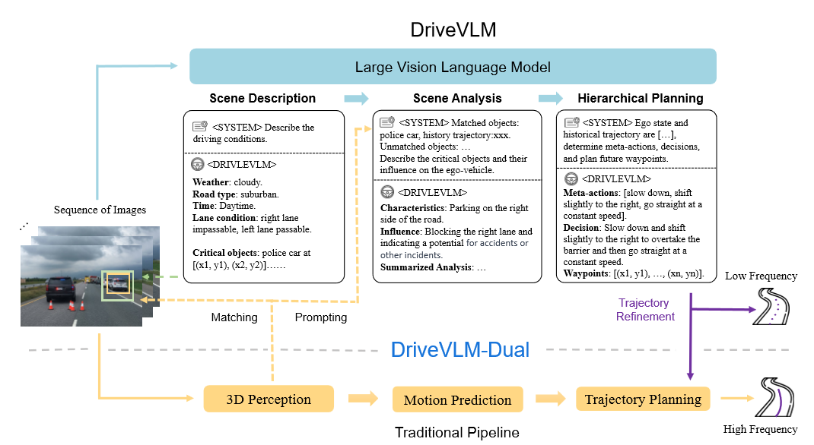
図1：DriveVLM と DriveVLM-Dual のモデルパイプライン。DriveVLM は画像を入力として受け取り、思考連鎖（CoT）の仕組みを通じて、シーン記述、シーン解析、階層的計画の結果を出力する。DriveVLM-Dual はさらに従来の 3D 知覚モジュールと軌道計画モジュールを組み込み、空間推論能力とリアルタイムの軌道計画を実現する。
図中ラベル：Large Vision Language Model＝大規模視覚言語モデル、Scene Description＝シーン記述、Scene Analysis＝シーン解析、Hierarchical Planning＝階層的計画、Sequence of Images＝画像系列、Matching＝照合、Prompting＝プロンプト付与、Trajectory Refinement＝軌道の洗練、Low Frequency＝低頻度、High Frequency＝高頻度、3D Perception＝3D 知覚、Motion Prediction＝動き予測、Trajectory Planning＝軌道計画、Traditional Pipeline＝従来のパイプライン。シーン記述欄：<SYSTEM> 運転状況を記述せよ。／Weather＝天候：曇り、Road type＝道路種別：郊外、Time＝時間帯：昼間、Lane condition＝車線状況：右車線は通行不可、左車線は通行可、Critical objects＝重要物体：パトカー（座標）。シーン解析欄：<SYSTEM> 照合済み物体：パトカー、過去軌道：xxx。未照合物体：…。重要物体とその自車両への影響を記述せよ。／Characteristics＝特性：道路右側に駐車中、Influence＝影響：右車線をふさいでおり、事故その他の事態の可能性を示している、Summarized Analysis＝要約された解析。階層的計画欄：<SYSTEM> 自車状態と過去軌道は［…］である。メタアクション、意思決定を決め、将来のウェイポイントを計画せよ。／Meta-actions＝メタアクション：［減速、右へわずかに寄る、一定速度で直進］、Decision＝意思決定：減速して右へわずかに寄り、バリアを追い越した後、一定速度で直進する、Waypoints＝ウェイポイント。（<DRIVLEVLM> は原図の表記のまま）
DriveVLM のパイプライン全体を図 1 に示す。画像系列は視覚言語モデル（VLM）によって処理され、特別な思考連鎖（CoT）［49］推論を行って運転計画の結果を導出する。DriveVLM のアーキテクチャは、Vision Transformer エンコーダ［50］と大規模言語モデル（LLM）からなる。視覚エンコーダが画像トークンを生成し、次に注意機構ベースの抽出器がそれらのトークンを LLM と整合させる。推論プロセスは 3 つのモジュール、すなわちシーン記述（3.2 節）、シーン解析（3.3 節）、階層的計画（3.4 節）に分けられる。
実世界への展開のために、3.5 節で DriveVLM と従来の自動運転パイプラインを組み合わせ、両アプローチの強みを活かすハイブリッドシステム DriveVLM-Dual を提案する。
シーン記述モジュールは、運転環境の記述と重要物体を特定する。
環境記述。天候や道路状況などの運転環境は、運転の難しさに無視できない影響を与える。そのため、モデルにはまず運転環境の言語記述 \(E\) を出力するようプロンプトを与える。これは複数の条件 \(E = \{E_{\text{weather}}, E_{\text{time}}, E_{\text{road}}, E_{\text{lane}}\}\) を含み、それぞれが運転環境の重要な側面を表す。天候成分 \(E_{\text{weather}}\) は晴れから雪までの状況にわたり、視界やトラクションに影響する。時間成分 \(E_{\text{time}}\) は昼間と夜間を区別し、視界の変化によって運転戦略に影響を与える。道路種別 \(E_{\text{road}}\)（市街地や高速道路など）はそれぞれ異なる課題をもたらし、車線状況 \(E_{\text{lane}}\) は現在の車線上の位置と可能な操作に焦点を当て、安全な運転判断に不可欠である。
重要物体の特定。環境条件に加え、運転シナリオ中のさまざまな物体が運転行動に大きく影響する。一定範囲内のすべての物体を検出する従来の自動運転の知覚モジュールとは異なり、我々は運転中の人間の認知プロセスに着想を得て、現在のシナリオに影響を与える可能性が最も高い重要物体（critical objects）の特定にのみ焦点を当てる。各重要物体を \(O_c\) と表し、2 つの属性、すなわち物体カテゴリ \(c\) と、画像上のおおよそのバウンディングボックス座標 \(b(x1, y1, x2, y2)\) を持つ。カテゴリと座標は言語モダリティにおける対応する言語 \(token\_id\) に写像され、後続のモジュールへの円滑な統合を可能にする。さらに、事前学習済みの視覚エンコーダを活用することで、DriveVLM は道路上の落下物や珍しい動物など、一般的な 3D 物体検出器では見逃されうるロングテールな重要物体を特定できる。
従来の自動運転パイプラインでは、予測モジュールは一般に物体の将来軌道の予測に集中する。高度な視覚言語モデルの登場により、現在のシーンについてより包括的な解析を行う能力が得られた。シーンレベルの解析は、すべての重要物体を環境記述とともに要約する。この要約はシーンの包括的な理解を与え、後続の計画モジュールに入力される。
重要物体の解析。DriveVLM は重要物体を 3 つの側面、すなわち静的属性 \(C_s\)、運動状態 \(C_m\)、特有の行動 \(C_b\) で特徴づける。静的属性 \(C_s\) は、道路脇の看板の視覚的手がかりやトラックの過大な積荷など、物体に固有の性質を記述するもので、潜在的な危険を先回りして回避するうえで重要である。運動状態 \(C_m\) は、位置、方向、行動を含む一定期間にわたる物体の動態を記述するもので、物体の将来軌道や自車両との潜在的な相互作用を予測するうえで不可欠な特性である。特有の行動 \(C_b\) は、自車両の次の運転判断に直接影響しうる物体の特別な行動やジェスチャを指す。すべての物体について 3 つの特性すべてを解析することをモデルに要求するわけではない。実際には、1 つの重要物体に当てはまる特性は 1 つか 2 つにすぎない。これらの特性を解析したうえで、DriveVLM は各重要物体が自車両に及ぼす潜在的な影響 \(I\) を予測する。
シーンレベルの要約は、次に経路、自車の姿勢と速度と組み合わされ、計画のためのプロンプトを形成する。最後に、DriveVLM はメタアクション、意思決定記述、軌道ウェイポイントの 3 段階で、運転計画を段階的に生成する。
メタアクション \(\boldsymbol{A}\)。メタアクションは \(a_i\) と表され、運転戦略の短期的な意思決定を表す。これらの行動は 17 のカテゴリに分類され、加速、減速、左折、車線変更、わずかな位置調整、待機などを含むが、これらに限らない。一定期間にわたる自車両の将来の操作を計画するため、メタアクションの系列を生成する。
意思決定記述 \(\boldsymbol{D}\)。意思決定記述 \(D\) は、自車両が採るべきより細かい運転戦略を明確に述べる。これは 3 つの要素、すなわち行動 \(\mathcal{A}\)、対象 \(\mathcal{S}\)、継続時間 \(\mathcal{D}\) を含む。行動（Action）は「曲がる」「待つ」「加速する」といったメタアクションに関わる。対象（Subject）は歩行者、交通信号、特定の車線など、相互作用する対象を指す。継続時間（Duration）は行動の時間的側面を示し、行動をどれだけの間続けるべきか、あるいはいつ開始すべきかを指定する。
軌道ウェイポイント \(\boldsymbol{W}\)。意思決定記述 \(D\) を確定した後、次の段階では対応する軌道ウェイポイントを生成する。これらのウェイポイントは \(W = \{w_1, w_2, ..., w_n\}\)、\(w_i = (x_i, y_i)\) と表され、あらかじめ定めた間隔 \(\Delta t\) で、将来の一定期間にわたる車両の経路を描く。これらの数値的なウェイポイントを言語トークンに写像し、自己回帰的に生成する。
VLM における高いレイテンシと、不正確な空間・運動の理解という課題を緩和するため、DriveVLM と従来の自動運転システムとを協調させる DriveVLM-Dual を提案する。この新しいアプローチは 2 つの主要な戦略、すなわち重要物体の解析への 3D 知覚の組み込みと、高頻度の軌道洗練からなる。
3D 知覚の統合。3D 検出器によって検出された物体を \(O_{\text{3D}} = \{c^i_{\text{3D}}, b^i_{\text{3D}}\}\) と表す。ここで \(b^i_{\text{3D}}\) は \(i\) 番目のバウンディングボックス、\(c^i_{\text{3D}}\) はそのカテゴリを表す。これらの 3D バウンディングボックスを 2D 画像に逆投影し、対応する 2D バウンディングボックス \(b^i_{\text{2D}}\) を得る。これらの 2D バウンディングボックス \(b^i_{\text{2D}}\) と \(b^j_c\) の間で IoU マッチングを行う。\(b^j_c\) は、先に特定された重要物体 \(O_{\text{critical}} = \{c^j_c, b^j_c\}\) のバウンディングボックスである。一定の近似 IoU のしきい値を満たし、かつ同じカテゴリに属する重要物体を、照合済み重要物体 \(O^{\text{matched}}_c\) として分類する。これは次のように定義される。
\[ O^{\text{matched}}_c = \{c^j_c, b^j_c\}, \quad \text{if } c^j_c = c^i_{\text{2D}} \text{ and } \text{aIoU}(b^j_c, b^i_{\text{2D}}) \gt \tau, \ \text{where } \text{aIoU}(b^j_c, b^i_{\text{2D}}) = \frac{S_{b^j_c \cap b^i_{\text{2D}}}}{S_{b^i_{\text{2D}}}}, \]
3D データ中に対応する一致を持たない重要物体は \(O^{\text{unmatched}}_c\) と表記する。
シーン解析モジュールでは、\(O^{\text{matched}}_c\) について、対応する 3D 物体の中心座標、向き、過去軌道をモデルへの言語プロンプトとして用い、物体の解析を支援する。逆に \(O^{\text{unmatched}}_c\) については、解析は画像から導出された言語トークンのみに依存する。この設計により、DriveVLM-Dual は重要物体の位置と動きをより正確に理解でき、全体的な性能が向上する。
高頻度の軌道洗練。リアルタイムかつ高頻度の推論能力を実現するため、DriveVLM を従来のプランナと統合して遅速（slow-fast）デュアルシステムを構成し、DriveVLM の高度な能力と従来の計画手法の効率性とを組み合わせる。DriveVLM から低頻度で軌道 \(W_{\text{slow}}\) を得た後、それを古典的プランナの参照軌道として用い、高頻度の軌道洗練を行う。最適化ベースのプランナの場合、\(W_{\text{slow}}\) は最適化ソルバの初期解として機能する。ニューラルネットワークベースのプランナの場合、\(W_{\text{slow}}\) は入力クエリとして用いられ、追加の入力特徴 \(f\) と組み合わされた後、\(W_{\text{fast}}\) と表される新しい計画軌道へとデコードされる。この過程の定式化は次のように記述できる。
\[ W_{\text{fast}} = \text{Planner}([W_{\text{slow}}, f]). \tag{1} \]
この洗練ステップにより、DriveVLM-Dual が生成する軌道は（1）より高い軌道品質を達成し、かつ（2）リアルタイム要件を満たすことが保証される。実際には、2 つのブランチは遅速の形で非同期に動作し、従来の自動運転ブランチのプランナモジュールは、VLM ブランチからの軌道を追加入力として選択的に受け取ることができる。
複雑でロングテールな運転シナリオへの対処における DriveVLM と DriveVLM-Dual の潜在能力を十分に引き出すため、Scene Understanding for Planning（計画のためのシーン理解）と呼ぶタスク（4.1 節）を、評価指標の一式（4.2 節）とともに形式的に定義する。さらに、シーン理解と計画のデータセットを整備するためのデータマイニングとアノテーションのプロトコル（4.3 節）を提案する。
Scene Understanding for Planning タスクは次のように定義される。入力は、周囲のカメラからのマルチビュー動画 \(\mathcal{V}\) と、任意で知覚モジュールからの 3D 知覚結果 \(\mathcal{P}\) からなる。出力は次の構成要素を含む。
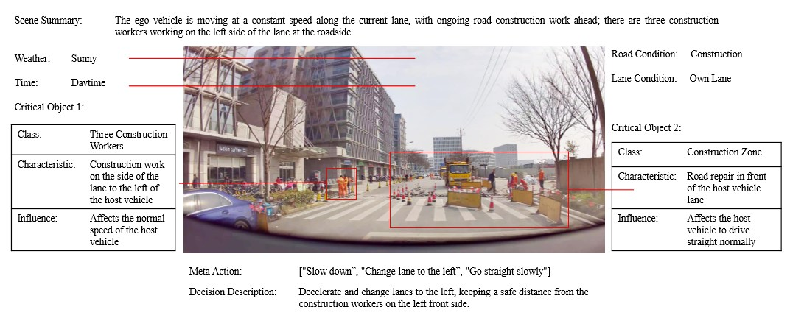
図2：SUP-AD データセットのアノテーション済みサンプル。
図中ラベル：Scene Summary＝シーン要約：自車両は現在の車線を一定速度で走行しており、前方では道路工事が行われている。車線左側の路肩で 3 人の作業員が作業している。／Weather＝天候：晴れ（Sunny）、Time＝時間帯：昼間（Daytime）、Road Condition＝道路状況：工事中（Construction）、Lane Condition＝車線状況：自車線（Own Lane）。Critical Object 1＝重要物体 1：Class＝クラス：3 人の工事作業員、Characteristic＝特性：自車両の左側車線の脇での工事作業、Influence＝影響：自車両の通常速度に影響する。Critical Object 2＝重要物体 2：Class＝クラス：工事区域、Characteristic＝特性：自車線前方での道路補修、Influence＝影響：自車両の通常の直進に影響する。Meta Action＝メタアクション：［「減速」「左へ車線変更」「ゆっくり直進」］、Decision Description＝意思決定記述：減速して左へ車線変更し、左前方の工事作業員との安全な距離を保つ。
モデルの性能を包括的に評価するため、我々はモデルによる運転シーンの解釈と、下された意思決定とに着目する。したがって評価には 2 つの側面、すなわちシーン記述／解析の評価とメタアクションの評価がある。
シーン記述／解析の評価。シーン記述に対する人手評価は主観的になることを踏まえ、事前学習済み LLM を用いる構造化されたアプローチを採用する。この方法では、生成されたシーン記述を、人手でアノテーションされた正解記述と比較する。正解記述は、環境条件、ナビゲーション、車線情報、さらに具体的な物体・動詞・それらの影響を伴う重要事象といった構造化データを含む。LLM は、生成された記述を正解との一貫性に基づいて評価し、採点する。
メタアクションの評価。メタアクションは、あらかじめ定義された意思決定の選択肢の集合である。運転上の意思決定はメタアクションの系列として定式化される。我々の評価方法は、動的計画法のアルゴリズムを用いて、モデルが生成した系列を人手でアノテーションされた正解系列と比較する。評価ではさらに各メタアクションの相対的な重要度も考慮すべきであり、一部を系列全体の文脈への影響が小さい「保守的行動」として指定する。頑健性を高めるため、まず LLM を用いて正解系列と意味的に等価な代替系列を生成し、頑健性を向上させる。これらの代替系列との類似度が最も高いものに基づいて最終的な運転意思決定スコアを計算する。提案指標の詳細は付録 B に示す。
提案タスクのための Scene Understanding for Planning (SUP-AD) Dataset を構築するため、図 3 に示す包括的なデータマイニングとアノテーションのパイプラインを提案する。具体的には、大規模なデータベースからロングテール物体のマイニングと困難シナリオのマイニングを行ってサンプルを収集し、次に各サンプルからキーフレームを選択して、さらにシーンのアノテーションを行う。データセットの統計は付録 A に示す。
ロングテール物体のマイニング。実世界の道路上の物体分布に基づき、まず奇妙な形状の車両、道路上の落下物、道路を横断する動物など、ロングテール物体カテゴリのリストを定義する。次に、大量のログから言語クエリを用いて運転データをマイニングできる CLIP ベースの検索エンジンを使って、これらのロングテールシナリオをマイニングする。その後、人手による点検を行い、指定したカテゴリと一致しないシーンを除外する。
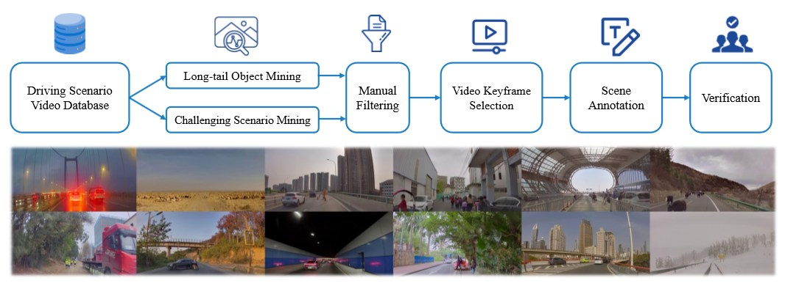
図3：シーン理解と計画のデータセットを構築するために提案するデータマイニングとアノテーションのパイプライン。データセットからランダムにサンプリングしたシナリオ例（下）は、データセットの多様性と複雑さを示している。
図中ラベル：Driving Scenario Video Database＝運転シナリオ動画データベース、Long-tail Object Mining＝ロングテール物体のマイニング、Challenging Scenario Mining＝困難シナリオのマイニング、Manual Filtering＝人手によるフィルタリング、Video Keyframe Selection＝動画キーフレームの選択、Scene Annotation＝シーンのアノテーション、Verification＝検証
困難シナリオのマイニング。ロングテール物体に加えて、変化する運転状況に応じて自車両の運転戦略を適応させる必要がある、困難な運転シナリオにも関心がある。これらのシナリオは、記録された運転操作の分散に基づいてマイニングされる。
キーフレームの選択。各シーンは動画クリップであるため、アノテーションする「キーフレーム」を特定することが不可欠である。困難なシナリオの多くでは、キーフレームは速度または方向の大きな変化が必要となる直前の瞬間である。包括的なテストに基づき、意思決定に最適な反応時間を保証するため、実際の操作より 0.5s から 1s 前のフレームをキーフレームとして選択する。運転行動の変化を伴わないシーンについては、現在の運転シナリオに関連するフレームをキーフレームとして選択する。
シーンのアノテーション。アノテータのグループを雇い、シーン記述、シーン解析、計画を含むシーンのアノテーションを行う。ただしウェイポイントは、車両の IMU 記録から自動ラベル付けできるため除く。シーンのアノテーションを容易にするため、次の機能を持つ動画アノテーションツールを作成した。（1）アノテータはプログレスバーを前後にスライドさせて動画の任意の部分を再生できる。（2）キーフレームのアノテーション中に、アノテータは画像上にバウンディングボックスを言語記述とともに描画できる。（3）運転計画のアノテーション中に、アノテータは行動と意思決定の候補リストから選択できる。各アノテーションは正確性と一貫性のために 3 人のアノテータによって入念に検証され、モデル学習のための信頼できるデータセットを保証する。図 2 は、詳細なアノテーションを付したサンプルシナリオを示している。
DriveVLM と DriveVLM-Dual を、提案する SUP-AD データセットと nuScenes データセット［44］で評価する。
SUP-AD データセット。SUP-AD データセットは、提案するデータマイニングとアノテーションのパイプラインによって構築されたデータセットである。これは 7.5 : 1 : 1.5 の比率で学習、検証、テストの分割に分けられる。学習分割でモデルを学習し、提案するシーン記述およびメタアクションの指標を用いてテスト分割でモデルの性能を評価する。また、LLM の汎化性能が損なわれないよう、追加のデータセットとのコチューニング（co-tuning）も採用する。
nuScenes データセット。nuScenes データセットは市街地シナリオの大規模な運転データセットで、1000 シーンからなり、各シーンは約 20 秒続く。先行研究［34, 51］に従い、モデルの性能を評価する指標として変位誤差（Displacement Error; DE）と衝突率（Collision Rate; CR）を採用する。
| 手法 | シーン記述 | メタアクション |
|---|---|---|
| Fine-tuning w/ Lynx［14］ | 0.46 | 0.15 |
| Fine-tuning w/ CogVLM［21］ | 0.49 | 0.22 |
| GPT-4V†［52］ | 0.38 | 0.19 |
| DriveVLM w/ Qwen | 0.71 | 0.37 |
表1：提案する SUP-AD データセットのテストセットにおける結果。†：GPT-4V の公式 API を使用。Lynx と CogVLM については、学習分割をファインチューニングに使用した。一方、GPT-4V についてはインコンテキスト学習を用いた。
| 手法 | L2 (m) ↓ | 衝突率 (%) ↓ | ||||||
|---|---|---|---|---|---|---|---|---|
| 1s | 2s | 3s | Avg. | 1s | 2s | 3s | Avg. | |
| NMP［30］ | - | - | 2.31 | - | - | - | 1.92 | - |
| SA-NMP［30］ | - | - | 2.05 | - | - | - | 1.59 | - |
| FF［32］ | 0.55 | 1.20 | 2.54 | 1.43 | 0.06 | 0.17 | 1.07 | 0.43 |
| EO［53］ | 0.67 | 1.36 | 2.78 | 1.60 | 0.04 | 0.09 | 0.88 | 0.33 |
| ST-P3［54］ | 1.33 | 2.11 | 2.90 | 2.11 | 0.23 | 0.62 | 1.27 | 0.71 |
| UniAD［34］ | 0.48 | 0.96 | 1.65 | 1.03 | 0.05 | 0.17 | 0.71 | 0.31 |
| VAD-Base［51］ | 0.17 | 0.34 | 0.60 | 0.37 | 0.07 | 0.10 | 0.24 | 0.14 |
| DriveVLM | 0.18 | 0.34 | 0.68 | 0.40 | 0.10 | 0.22 | 0.45 | 0.27 |
| DriveVLM-Dual† | 0.15 | 0.29 | 0.48 | 0.31 | 0.05 | 0.08 | 0.17 | 0.10 |
表2：nuScenes 検証データセットにおける計画の結果。DriveVLM-Dual が最良の性能を達成している。† は VAD［51］と協調させたことを示す。
コチューニング。ファインチューニングの過程で LLM の汎化能力を維持するため、いくつかの追加データセットを用いたコチューニングを採用した。これには Talk2Car［41］、BDDX［45］、Drama［48］、SUTD［55］、LLAVA［17］の各データセットが含まれる。各データセットについて、SUP-AD および nuScenes データセットのデータ量に対応して 1:1 の比率でランダムサンプリングを行った。このコチューニングの手法を用いた結果、シーン記述とメタアクションの評価指標の下での SUP-AD データセットのスコアは事実上変化せず、同時に LLM の本来の能力と汎化能力の維持も確保されることがわかった。
ベースモデル。既定の大規模視覚言語モデルとして Qwen-VL［18］を用いる。これは質問応答、視覚的位置特定、テキスト認識などのタスクで顕著な性能を示す。総パラメータ数は 96 億で、視覚エンコーダ（19 億）、視覚言語アダプタ（0.8 億）、大規模言語モデル（Qwen、77 億）を含む。画像は視覚エンコーダで符号化される前に 448 × 448 の解像度にリサイズされる。学習時には、現在時刻 \(T\)s、\(T-1\)s、\(T-2\)s、\(T-3\)s の画像系列をランダムに選択して入力とする。選択された画像は現在時刻のフレームを必ず含み、時系列の昇順に従う。
SUP-AD。表 1 に示すように、提案する DriveVLM をいくつかの大規模視覚言語モデルで構成したときの性能を示し、GPT-4V と比較する。Qwen-VL をバックボーンとする DriveVLM は、他のオープンソース VLM と比べて質問応答と柔軟な対話の能力が高いため、最良の性能を達成する。GPT-4V は視覚と言語の処理において頑健な能力を示すものの、ファインチューニングができずインコンテキスト学習に限られるため、シーン記述タスクにおいて余計な情報を生成することが多い。我々の評価指標の下では、この追加情報はしばしばハルシネーションに分類され、結果としてスコアが低くなる。
nuScenes。表 2 に示すように、DriveVLM-Dual は VAD と協調させた場合に nuScenes の計画タスクで最先端の性能を達成する。これは、本手法が複雑なシーンの理解向けに設計されているにもかかわらず、通常のシナリオでも優れていることを示している。
モデル設計。DriveVLM において我々が設計したモジュールの重要性をよりよく理解するため、表 3 に示すように、モジュールのさまざまな組み合わせについてアブレーションを行う。重要物体の解析を加えることで、モデルは運転環境における重要な要素を特定して優先順位を付けられるようになり、より安全な走行のための意思決定の精度が向上する。3D 知覚データを統合することで、モデルは周囲環境をより精緻に理解し、正確な予測を達成する。
| ID | Base | CO | 3D | L2 (m) ↓ | 衝突率 (%) ↓ | ||||||
|---|---|---|---|---|---|---|---|---|---|---|---|
| 1s | 2s | 3s | Avg. | 1s | 2s | 3s | Avg. | ||||
| 1 | ✓ | 0.19 | 0.41 | 0.89 | 0.49 | 0.16 | 0.28 | 0.63 | 0.36 | ||
| 2 | ✓ | ✓ | 0.20 | 0.38 | 0.75 | 0.44 | 0.15 | 0.29 | 0.61 | 0.35 | |
| 3 | ✓ | ✓ | ✓ | 0.18 | 0.34 | 0.68 | 0.40 | 0.10 | 0.22 | 0.45 | 0.27 |
表3：nuScenes 検証セットにおける設計上の選択のアブレーション。「Base」は、提案する CoT 推論を用いず、階層的計画の結果のみを示すことを指す。「CO」は重要物体の解析を追加したことを表す。「3D」は 3D 知覚結果を補助的な言語プロンプトとして含めたことを示す。
| 手法 | L2 (m) ↓ | 衝突率 (%) ↓ | ||||||
|---|---|---|---|---|---|---|---|---|
| 1s | 2s | 3s | Avg. | 1s | 2s | 3s | Avg. | |
| UniAD［34］ | 0.48 | 0.96 | 1.65 | 1.03 | 0.05 | 0.17 | 0.71 | 0.31 |
| DriveVLM-Dual (UniAD) | 0.17 | 0.37 | 0.63 | 0.39 | 0.08 | 0.18 | 0.35 | 0.20 |
| MLP | 0.25 | 0.46 | 0.62 | 0.44 | 0.14 | 0.18 | 0.28 | 0.20 |
| DriveVLM-Dual (MLP) | 0.14 | 0.35 | 0.30 | 0.31 | 0.09 | 0.13 | 0.18 | 0.13 |
| VAD［51］ | 0.17 | 0.34 | 0.60 | 0.37 | 0.07 | 0.10 | 0.24 | 0.14 |
| DriveVLM-Dual(VAD) | 0.15 | 0.29 | 0.48 | 0.31 | 0.05 | 0.08 | 0.17 | 0.10 |
表4：DriveVLM-Dual における従来の自動運転パイプラインのアブレーション。MLP は AD-MLP［56］に類似した手法を表す。
（訳注：DriveVLM-Dual (MLP) の L2 は 3s が 0.30 と 2s の 0.35 より小さく、また 1s〜3s の平均は 0.26 となり Avg. の 0.31 と一致しない。原表の値に誤記がある可能性がある。）
従来の自動運転パイプライン。デュアルシステム設計の汎化性を示すため、nuScenes の検証セットにおいて、異なる従来の自動運転パイプラインと組み合わせた DriveVLM-Dual を評価する。表 4 に示すように、提案する DriveVLM-Dual は異なる従来の自動運転パイプラインにうまく適応する。単独の MLP 手法は VAD と比べて顕著な性能差を示すが、DriveVLM-Dual の両変種はほぼ同等の性能を達成しており、我々のデュアルシステム設計の有効性と頑健性を裏付けている。
DriveVLM の定性的な結果を図 4 に示す。図 4a では、DriveVLM は現在のシーンの状況を正確に予測し、こちらに近づいてくる自転車運転者に関してよく考慮された計画判断を組み込んでいる。図 4b では、DriveVLM は前方の交通警察官が自車両に進行を促すジェスチャを効果的に理解し、さらに右側で三輪車に乗っている人も考慮して、妥当な運転判断を下している。これらの定性的な結果は、複雑なシナリオを理解し適切な運転計画を立てる本モデルの卓越した能力を示している。本モデルの出力のさらなる可視化は付録 C に示す。
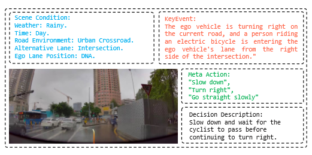
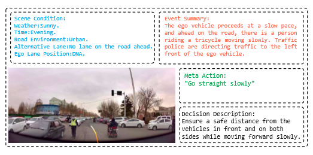
図4：DriveVLM の定性的な結果。オレンジ色の曲線は、モデルが計画した今後 3 秒間の将来軌道を表す。（上：(a)、下：(b)）
図中ラベル：(a) Scene Condition＝シーン状況：天候：雨、時間帯：昼、道路環境：市街地の交差点、代替車線：交差点、自車線の位置：DNA。KeyEvent＝主要事象：「自車両は現在の道路で右折しようとしており、電動自転車に乗った人が交差点の右側から自車両の車線に進入しつつある。」Meta Action＝メタアクション：「減速」「右折」「ゆっくり直進」。Decision Description＝意思決定記述：減速して自転車運転者の通過を待ってから右折を続ける。(b) シーン状況：天候：晴れ、時間帯：夕方、道路環境：市街地、代替車線：前方の道路に車線なし、自車線の位置：DNA。Event Summary＝事象の要約：自車両はゆっくりしたペースで進んでおり、前方の道路には三輪車にゆっくり乗っている人がいる。交通警察官が自車両の左前方で交通整理をしている。メタアクション：「ゆっくり直進」。意思決定記述：ゆっくり前進しながら、前方および両側の車両との安全な距離を確保する。（DNA は原図の表記のまま）
| ベース LLM | Avg. | MMMU［57］ 5% | SEEDBench［58］ 20% | RefCOCO［59］ 15% | SUP-AD 15% | Drivelm-QA［60］ 7.5% | Drivelm-Grounding［60］ 7.5% | RealworldQA［61］ 15% |
|---|---|---|---|---|---|---|---|---|
| MobileLLaMA1.4B［62］ | 0.457 | 0.331 | 0.590 | 0.421 | 0.520 | 0.686 | 0.735 | 0.501 |
| Qwen-1.8B［63］ | 0.477 | 0.340 | 0.622 | 0.492 | 0.523 | 0.680 | 0.725 | 0.518 |
| Gemma-2B［64］ | 0.439 | 0.345 | 0.571 | 0.330 | 0.510 | 0.680 | 0.721 | 0.507 |
| MiniCPM-2.4B［65］ | 0.482 | 0.379 | 0.640 | 0.444 | 0.539 | 0.676 | 0.717 | 0.553 |
| MobileLLaMA2.7B［62］ | 0.496 | 0.348 | 0.635 | 0.557 | 0.546 | 0.683 | 0.725 | 0.536 |
| Phi3-3.8B［66］ | 0.538 | 0.435 | 0.688 | 0.608 | 0.604 | 0.697 | 0.743 | 0.592 |
| Qwen-4B［63］ | 0.511 | 0.366 | 0.671 | 0.603 | 0.515 | 0.681 | 0.735 | 0.562 |
| Qwen-4B* | 0.529 | 0.373 | 0.684 | 0.624 | 0.596 | 0.699 | 0.738 | 0.553 |
表5：画像エンコーダとして ViT-L-336［50］を用いた LLAVA-1.5［67］アーキテクチャにおける、さまざまなデータセットでの異なる LLM の性能。* は画像エンコーダとして SigLIP-L-384［68］を用いたことを示す。汎用的な能力よりも、自動運転により関連する能力における VLM の性能を重視するため、各ベンチマークに異なるスコアの重みを設定している。
| LLM | プロンプト長 (toks) | プレフィル遅延 (s) | プレフィル (tok/s) | デコード (tok/s) | 出力 (toks) | デコード遅延 (s) | モデルサイズ (GB) | 層数 | ヘッドサイズ | 語彙サイズ |
|---|---|---|---|---|---|---|---|---|---|---|
| Gemma-2B［64］ | 1063 | 0.95 | 1121 | 40.9 | 59 | 1.44 | 4.7 | 18 | 256 | 256000 |
| Phi3-4k［66］ | 1045 | 1.30 | 797.3 | 49.0 | 59 | 1.20 | 7.2 | 32 | 96 | 32064 |
| MobileLLaMa-2.7B［62］ | 1047 | 0.92 | 1134 | 61.7 | 59 | 0.96 | 5.0 | 32 | 80 | 32000 |
| MobileLLaMa-1.4B［62］ | 1047 | 0.23 | 4634 | 117.4 | 59 | 0.50 | 2.5 | 24 | 128 | 32000 |
| Qwen4B［63］ | 1078 | 0.57 | 1882 | 44.5 | 59 | 1.33 | 7.5 | 40 | 128 | 151936 |
| Qwen1.8B［63］ | 1078 | 0.23 | 4709 | 79.6 | 59 | 0.74 | 3.7 | 24 | 128 | 151936 |
表6：OrinX チップ上で量子化・展開した後の、異なる LLM の推論性能。Qwen シリーズが最良の性能を達成した。
DriveVLM-Dual を 2 基の OrinX プロセッサを搭載した自動運転車両に展開し、OrinX-1 で高頻度のエンドツーエンド運転システムを、OrinX-2 で DriveVLM を動作させる。これら 2 つのシステムは非同期に動作し協調する。さらに DriveVLM を最適化し、OrinX 上で平均 410 ms の推論速度を達成した。このデュアルシステム展開の動画デモは次のリンクで見ることができる：https://www.youtube.com/watch?v=MMCOOTLMT74。
本節では、エッジデバイスへの実用的な展開に向けた知見を与えるいくつかの比較実験を示す。なお、すべての VLM は、一般的なデータセットと、自動運転向けに特別に設計した我々独自のデータセットで事前学習およびファインチューニングされている。
ベース LLM。車両のハードウェアのメモリと帯域幅には限りがあるため、リアルタイム推論を維持するには過度に大きな LLM を使用できない。そこで、パラメータ数が 40 億未満のモデルを選択した。表 5 と表 6 に示すように、実験により、Orin アーキテクチャ上では「幅広く浅い」Qwen シリーズ（幅が広く層が少ない）のモデルが、「幅狭く深い」モデル（幅が狭く層が多い）よりも推論速度で優れることが明らかになった。
| バックボーン | トークン長 | 手法 | 重み付き合計 | MMMU［57］ 5% | SEEDBench［58］ 20% | RefCOCO［59］ 15% | SUP-AD 15% | Drivelm-QA［60］ 7.5% | Drivelm-Grounding［60］ 7.5% | RealworldQA［61］ 15% | PointVQA 15% |
|---|---|---|---|---|---|---|---|---|---|---|---|
| ViT-L-336［50］ | - | - | 0.421 | 0.368 | 0.657 | 0.502 | 0.553 | 0.688 | 0.742 | 0.541 | 0.583 |
| ViT-L-336 | - | Fixed 1x2 + CA-256 | 0.413 | 0.388 | 0.62 | 0.327 | 0.543 | 0.699 | 0.733 | 0.536 | 0.563 |
| ViT-L-336 | - | Fixed 2x2 + CA-256 | 0.405 | 0.376 | 0.618 | 0.306 | 0.518 | 0.692 | 0.731 | 0.523 | 0.594 |
| ViT-L-448 | - | Fixed 1x2 + CA-256 | 0.383 | 0.391 | 0.542 | 0.184 | 0.528 | 0.689 | 0.718 | 0.470 | 0.562 |
| ViT-L-336 | - | Fixed 1x2 + S2 | 0.368 | 0.383 | 0.511 | 0.198 | 0.469 | 0.689 | 0.718 | 0.469 | 0.314 |
| ViT-L-336 | - | Fixed 1x2 + S2 | 0.368 | 0.381 | 0.537 | 0.207 | 0.544 | 0.698 | 0.729 | 0.460 | 0.554 |
| ViT-L-336 | - | DM-4 + CA-256 | 0.409 | 0.377 | 0.610 | 0.277 | 0.544 | 0.698 | 0.726 | 0.525 | 0.554 |
| ViT-L-336 | - | DM-6 + CA-256 | 0.381 | 0.381 | 0.500 | 0.162 | 0.523 | 0.700 | 0.729 | 0.466 | 0.584 |
| ViT-L-336 | - | DM-4 + PT | 0.426 | 0.376 | 0.653 | 0.557 | 0.585 | 0.700 | 0.743 | 0.540 | 0.598 |
| ViT-L-336 | - | DM-4 + SM + LT | 0.413 | 0.403 | 0.617 | 0.293 | 0.550 | 0.699 | 0.737 | 0.527 | 0.532 |
| ViT-L-336 | - | DM-4 + SM + AAP + LT | 0.406 | 0.384 | 0.610 | 0.273 | 0.518 | 0.68 | 0.726 | 0.520 | 0.533 |
| ViT-L-336 | - | DM-4 + SM + CD + LT | 0.409 | 0.388 | 0.630 | 0.480 | 0.515 | 0.700 | 0.734 | 0.524 | 0.577 |
| SigLIP-L-384［68］ | 576 | - | 0.432 | 0.389 | 0.631 | 0.615 | 0.624 | 0.707 | 0.749 | 0.556 | 0.560 |
| SigLIP-L-768 | 576 | - | 0.438 | 0.377 | 0.642 | 0.580 | 0.638 | 0.712 | 0.764 | 0.561 | 0.556 |
| SigLIP-L-1152 | 576 | - | 0.436 | 0.377 | 0.637 | 0.595 | 0.628 | 0.715 | 0.763 | 0.571 | 0.564 |
| SigLIP-L-384-768 | 576 | PE | 0.434 | 0.367 | 0.632 | 0.581 | 0.631 | 0.716 | 0.762 | 0.556 | 0.554 |
| SigLIP-L-512-960 | 480 | PE | 0.442 | 0.369 | 0.640 | 0.557 | 0.650 | 0.719 | 0.762 | 0.579 | 0.568 |
表7：ViT の本来の入力解像度をより高い解像度へ拡張するための異なる手法の性能。「CA」はクロスアテンション、「DM」は Dynamic Max の略、「PT」はパッチ終端トークン（patch end token）の使用、「SM」は Spatial Merge、「LT」は行終端トークン（line end token）の使用、「AAP」は Adaptive Average Pooling の略、「CD」は Convolutional Down-sampling を表す。「PE」は位置埋め込みの補間（Position Embedding Interpolation）を表す。これらの手法の中では、SigLIP-L-384 に PE 補間を適用し、768 解像度の画像を入力として受け取るよう改変したものが、推論速度と性能の良好なトレードオフを達成する。
| プロジェクタ | 元トークン数 | 圧縮後 | 出力 (ms) | プレフィル (ms) | Avg. | MMMU［57］ | SEEDV2［58］ | BDD［?］ | Drivelm-QA［60］ | Drivelm-grounding［60］ | RealworldQA［61］ | RefCOCO［59］ | SUP-AD |
|---|---|---|---|---|---|---|---|---|---|---|---|---|---|
| MLP (Baseline) | 576 | 576 | 666.60 | 707.93 | 56.27 | 37.90 | 64.00 | 53.90 | 67.60 | 71.70 | 55.30 | 44.40 | 53.90 |
| LDPNetV2［62］ | 576 | 576 | 661.70 | 707.42 | 50.53 | 37.67 | 56.71 | 53.36 | 68.90 | 73.20 | 48.30 | 21.29 | 54.70 |
| Perceiver Resampler［69］ | 576 | 576 | 637.20 | 666.20 | 49.71 | 39.93 | 58.84 | 52.21 | 68.37 | 71.90 | 49.61 | 19.01 | 48.70 |
| Pixel shuffle | 576 | 256 | 610.70 | 655.92 | 52.02 | 40.42 | 60.20 | 55.19 | 68.72 | 71.52 | 51.44 | 28.23 | 48.40 |
| LDPNetV2 | 576 | 256 | 605.32 | 652.79 | 54.73 | 38.93 | 62.19 | 54.82 | 68.57 | 72.78 | 50.59 | 34.32 | 59.30 |
| Pixel shuffle | 576 | 144 | 604.98 | 645.61 | 49.40 | 38.98 | 61.63 | 56.06 | 69.18 | 73.18 | 51.05 | 30.67 | 58.80 |
| LDPNetV2 | 576 | 144 | 597.15 | 646.77 | 55.56 | 38.93 | 62.63 | 56.23 | 68.93 | 72.48 | 50.59 | 33.14 | 59.30 |
| LDPNetV2 | 576 | 64 | 616.20 | 645.18 | 56.24 | 39.40 | 61.80 | 54.60 | 68.80 | 72.60 | 51.00 | 41.88 | 61.20 |
表8：視覚トークン圧縮のための異なる手法の性能。LDPNetV2 を用いて元のトークンを元のトークン数の 75% に圧縮すると、性能と速度の最良のトレードオフが得られる。
（訳注：原表の BDD 列の引用番号は「[?]」となっており、参照先が欠落している。また本文では「画像トークン数を 75% 削減」とあり、表の 576→144 もこれに対応するが、キャプションの「元のトークン数の 75% に圧縮」とは食い違っている。）
| Base + q4f16_1 | Eagle［72］+ q4f16_1 | Medusa［73］+ q4f16_ft | Eagle + q4f16_ft | Eagle + q4f16_ft + Shrink Vocab Size(1024) | |
|---|---|---|---|---|---|
| 量子化方式 | q4f16_1 | q4f16_1 | q4f16_ft | q4f16_ft | q4f16_ft |
| 入力サイズ | (384, 960) | (384, 960) | (384, 960) | (384, 960) | (384, 960) |
| プレフィルトークン数 | 604 | 604 | 613 | 604 | 613 |
| 出力トークン数 | 37 | 39 | 41 | 41 | 41 |
| プレフィル速度 (tok/s) | 1818 | 1793 | 2160.64 | 2230 | 2175.35 |
| デコード速度 (tok/s) | 109 | 172 | 232.34 | 295.04 | 518.3 |
| プレフィル遅延 (s) | 0.332 | 0.340 | 0.284 | 0.276 | 0.274 |
| デコード遅延 (s) | 0.328 | 0.216 | 0.176 | 0.130 | 0.071 |
| 高速化率 | 1 | 1.57 | 2.17 | 2.7 | 4.33 |
表9：異なる投機的サンプリング手法の性能。「Shrink Vocab Size」は、語彙を最も頻繁に使われる 1024 語に削減することを意味する。「q4f16_1」は、効率的なモデル圧縮のために 16 ビット浮動小数点表現を用いる 4 ビット量子化手法であり、「q4f16_ft」は量子化後の性能を高めるためのその後のファインチューニングを含む。
視覚エンコーダ。自動運転における細粒度の視覚理解には高解像度の画像が不可欠である。表 7 に示すように、視覚エンコーダとして用いる基本的な ViT モデルと比較して、異なる GridPatch 戦略や PE（位置埋め込み；Position Embedding）補間など、いくつかの選択肢を検討した。最終的に、リアルタイム推論のために、より単純な PE 補間付きの SigLIP-L-384 モデルを選択し、元の 384 解像度の PE 補間と、追加の畳み込み層によるパラメータのファインチューニングによって高解像度入力を実現した。
視覚トークンの圧縮。高解像度画像による計算負荷の増大に対処するため、表 8 に示すように、LDPNetv2［62］を実装して、性能を損なうことなく画像トークン数を 75% 削減した。さらに、LDPNetv2 の平均プーリング層を畳み込み層に置き換えることで性能を向上させた。
動画入力。自動運転のシナリオでは、物体の運動の変化を正確に評価するために、より多くの時間的文脈が必要である。我々は短期メモリバンク［70］の戦略を採用し、過去フレームの視覚特徴を特徴キューに一時的に保存する。現在時刻の特徴のみを抽出し、LLM へ射影する前に複数の過去フレームと融合する。基本的な時空間プーリングに加え、SE［71］ブロックを追加して複数の時間フレームの重み付き融合を行った。
投機的サンプリング。投機的サンプリング（Speculative Sampling）は、ありそうな出力を先回りして生成することで推論を高速化するために用いられる。この手法は予測生成のレイテンシを削減し、精度を大きく損なうことなく大幅な高速化を実現する。表 9 に示すように、OrinX チップ向けに特別に設計した我々の推論フレームワーク上で、Medusa［73］と Eagle［72］の 2 つの投機的サンプリング手法を評価した。Eagle はデコード遅延において 2.7 × の高速化を達成し（Medusa は 2.17 ×）、車両へのリアルタイム展開を実現可能にした。
まとめると、本論文では DriveVLM と DriveVLM-Dual を提案した。DriveVLM は VLM を活用し、複雑な運転環境の解釈において大きな進歩を遂げている。DriveVLM-Dual は既存の 3D 知覚と計画のアプローチを相乗させることでこれらの能力をさらに高め、VLM に固有の空間推論と計算上の課題に効果的に対処する。さらに、自動運転のための計画に向けたシーン理解タスクを、評価指標およびデータセット構築プロトコルとともに定義した。DriveVLM と DriveVLM-Dual は、公開ベンチマークと我々のベンチマークにおいて、特に入り組んだ動的なシナリオへの対処で最先端手法を上回った。最後に、量産車での車載展開とテストを通じて DriveVLM-Dual の有効性を検証した。
論文執筆にご協力いただいた清華大学の Chenxu Hu 氏に感謝する。車載展開に関する実験に尽力いただいた Li Auto の Xu Bian、Hongkun Chen、Sui Cong、Chengze Guan、Mingyu Guo、Yue Jiang、Qi Jiang、Pengfei Ji、Wei Xiao、Dafeng Wei、Zijian Wang、Zhao Yang、Chenglong Zhao、Simeng Zhao、Jian Zhou の各氏に感謝する。
参考文献は原文のまま掲載した。
メタアクションの統計。運転戦略を形式的に表現するためにメタアクション系列を用いる。メタアクションは 17 のカテゴリに分類される。図 5 に示すように、各メタアクションがメタアクション系列の 1 番目／2 番目／3 番目に現れる分布を示す。これは、SUP-AD データセットにおけるメタアクションがかなり多様であることを示している。また、シーンあたりのメタアクションの長さの分布を図 6 に示す。ほとんどのシーンは 2 つまたは 3 つのメタアクションを含み、複雑な運転戦略を伴う少数のシーンは 4 つ以上のメタアクションを含む。
メタアクションのアノテーション。各運転シーンのメタアクション系列は、将来フレームにおける実際の運転戦略に基づいて人手でアノテーションされる。これらのメタアクションは完全な運転戦略を網羅するよう設計されており、自車両の将来軌道と一貫するように構成されている。これらは 3 つの主要なクラスに分けられる。
SUP-AD データセットは運転シナリオの 1,000 本の動画クリップから構成される。図 7 に示すように、40 以上のカテゴリにわたる幅広い運転シナリオを網羅している。以下に一部のシナリオの説明を示す。
AEB Data（AEB データ）：自動緊急ブレーキ（Automatic Emergency Braking; AEB）のデータ。
Road Construction（道路工事）：前方に注意標識、バリア、工事機材がある一時的な作業区域。
Close-range Cut-ins（近距離の割り込み）：他車両が自車両の車線に突然割り込むこと。
Roundabout（ラウンドアバウト）：車両が連続した環状路を走行する形式の交差点。
Animals Crossing Road（道路を横断する動物）：自車両の前方で道路を横断する動物。
Braking（ブレーキ）：自車両の人間のドライバーがブレーキを踏むこと。
Traffic Police Officers（交通警察官）：交通を管理・誘導する交通警察官。
Blocking Traffic Lights（信号機の遮蔽）：大型車両が交通信号の視認を妨げていること。
Cutting into Other Vehicle（他車両への割り込み）：前方の他車両の車線に割り込むこと。
Ramp（ランプ）：高速道路で本線と分岐路を結ぶ曲線状の道路。
Debris on the Road（道路上の落下物）：さまざまな種類の落下物がある道路。
Narrow Roads（狭い道路）：慎重な走行が必要な狭い道路。
Pedestrians Popping Out（歩行者の飛び出し）：自車両の前方に歩行者が飛び出し、減速またはブレーキが必要となること。
People on Bus Posters（バス広告の人物）：知覚システムを妨げる可能性のあるポスターを掲げたバス。
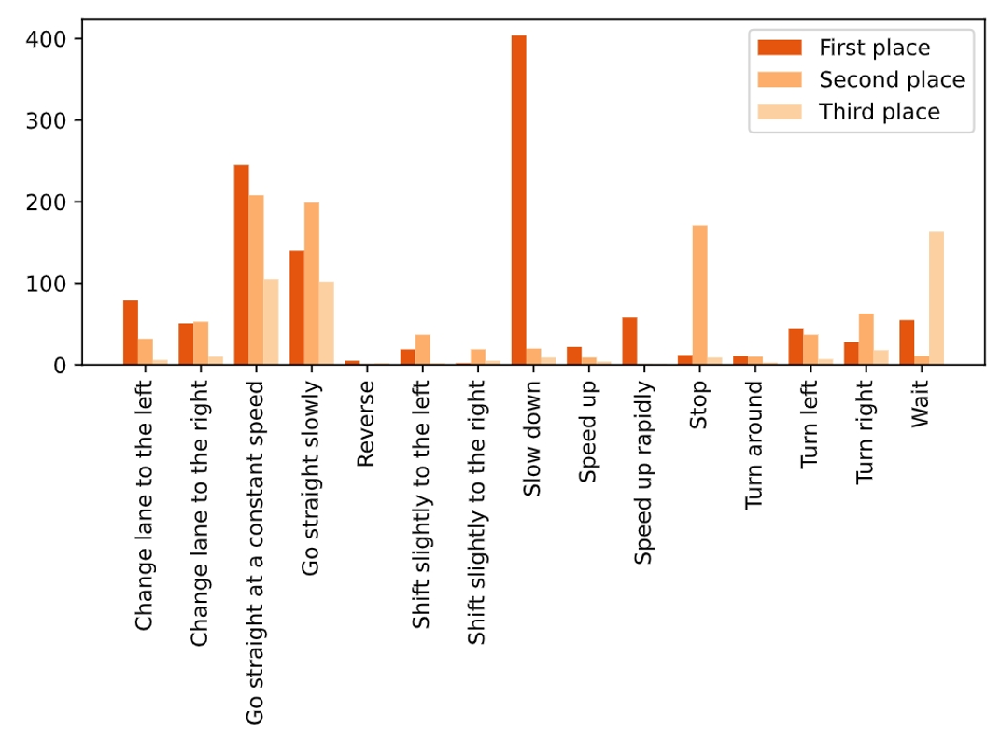
図5：各メタアクションが、メタアクション系列の 1 番目、2 番目、3 番目にそれぞれ現れる分布。
図中ラベル：First place＝1 番目、Second place＝2 番目、Third place＝3 番目。Change lane to the left＝左へ車線変更、Change lane to the right＝右へ車線変更、Go straight at a constant speed＝一定速度で直進、Go straight slowly＝ゆっくり直進、Reverse＝後退、Shift slightly to the left＝左へわずかに寄る、Shift slightly to the right＝右へわずかに寄る、Slow down＝減速、Speed up＝加速、Speed up rapidly＝急加速、Stop＝停止、Turn around＝U ターン、Turn left＝左折、Turn right＝右折、Wait＝待機。（訳注：図の横軸は 15 カテゴリで、本文の「17 カテゴリ」と一致しない。また本文 A.1 の「slow down rapidly（急減速）」は図になく、代わりに「Speed up rapidly（急加速）」がある。）
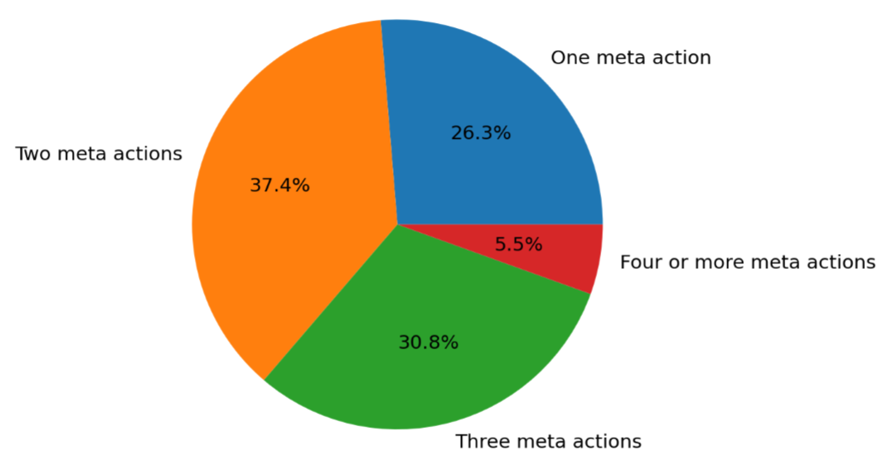
図6：シーンあたりのメタアクションの長さの分布。
図中ラベル：One meta action＝メタアクション 1 つ（26.3%）、Two meta actions＝メタアクション 2 つ（37.4%）、Three meta actions＝メタアクション 3 つ（30.8%）、Four or more meta actions＝メタアクション 4 つ以上（5.5%）
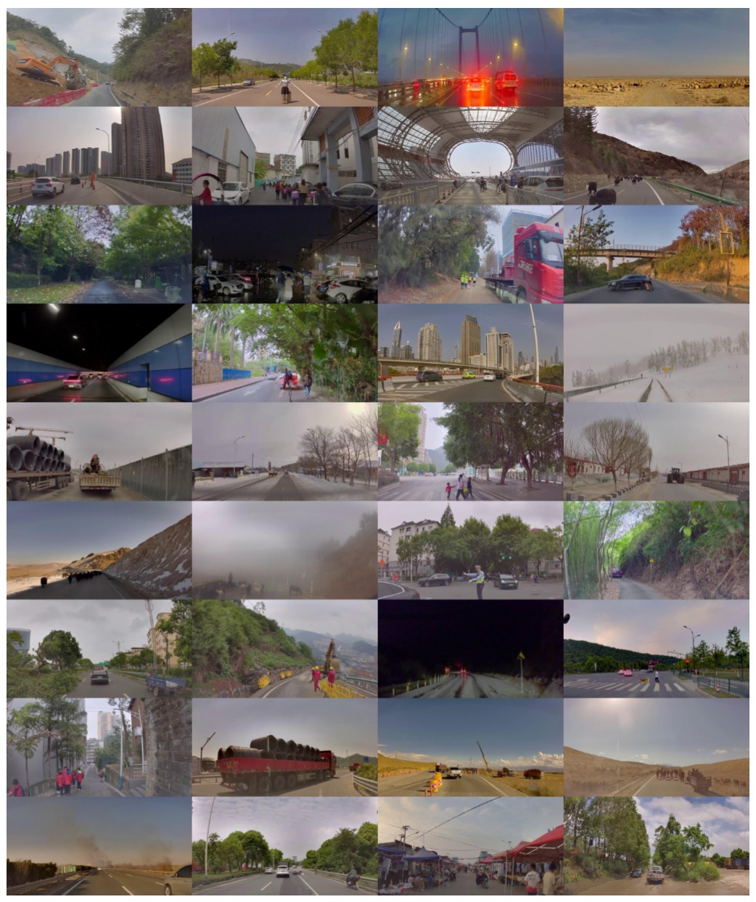
図7：SUP-AD データセットにおける多様な運転シナリオ。
Merging into High Speed（高速道路への合流）：低速道路から高速道路へ走行し、加速が必要となること。
Barrier Gate（遮断機）：上げ下げでき、道路をふさぐ遮断機。
Fallen Trees（倒木）：道路上の倒木で、潜在的な危険を避けるため慎重な走行が必要なもの。
Complex Environments（複雑な環境）：慎重な走行を必要とする複雑な運転環境。
Mixed Traffic（混合交通）：自動車、歩行者、自転車が同一または隣接する車道に現れる混雑したシナリオ。
Crossing Rivers（河川の横断）：橋を走行して川を渡ること。
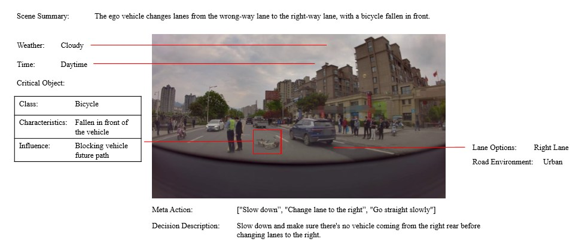
図8：SUP-AD データセットにおける転倒した自転車・オートバイの例。自車両の前方で自転車が倒れており、自車両は車線変更が必要である。
図中ラベル：Scene Summary＝シーン要約：自車両は逆走車線から正しい方向の車線へ車線変更する。前方には自転車が倒れている。／Weather＝天候：曇り、Time＝時間帯：昼間、Lane Options＝車線の選択肢：右車線、Road Environment＝道路環境：市街地。Critical Object＝重要物体：Class＝クラス：自転車、Characteristics＝特性：車両の前方に倒れている、Influence＝影響：車両の将来の経路をふさいでいる。Meta Action＝メタアクション：［「減速」「右へ車線変更」「ゆっくり直進」］、Decision Description＝意思決定記述：減速し、右後方から車両が来ていないことを確認してから右へ車線変更する。
Screen（遮蔽幕）：片側に遮蔽幕（スクリーン）がある道路で、知覚システムを妨げる可能性があるもの。
Herds of Cattle and Sheep（牛や羊の群れ）：牛や羊の群れがいる田舎道で、これらの動物を驚かせないよう慎重な運転が必要なもの。
Vulnerable Road Users（交通弱者）：歩行者、自転車運転者、オートバイ運転者など、道路の利用中に負傷しやすい道路利用者。
Road with Gallet（砕石の散らばった道路）：路面一面に砕石（原文表記は gallet）が散らばった、ほこりっぽい道路。
残りのシナリオカテゴリは次のとおりである：Motorcycles and Trikes（オートバイと三輪車）、Intersection（交差点）、People carrying Umbrella（傘を差した人）、Vehicles Carrying Cars（車両運搬車）、Vehicles Carrying Branches（枝を積んだ車両）、Vehicles with Pipes（パイプを積んだ車両）、Strollers（ベビーカー）、Children（子ども）、Tunnel（トンネル）、Down Ramp（下りランプ）、Sidewalk Stalls（歩道の露店）、Rainy Day（雨天）、Crossing Train Tracks（踏切の横断）、Unprotected U-turns（保護されていない U ターン）、Snowfall（降雪）、Large Vehicles Invading（大型車両のはみ出し）、Falling Leaves（落ち葉）、Fireworks（花火）、Water Sprinklers（散水車）、Potholes（路面の穴）、Overturned Motorcycles（転倒したオートバイ）、Self-ignition and Fire（自然発火と火災）、Kites（凧）、Agricultural Machinery（農業機械）。
図 8、9、10、11、12、13 にアノテーション内容のさらなる例を示す。これらの例のシナリオカテゴリは、それぞれ転倒した自転車・オートバイ、牛や羊の群れ、倒木、河川の横断、遮断機、降雪である。
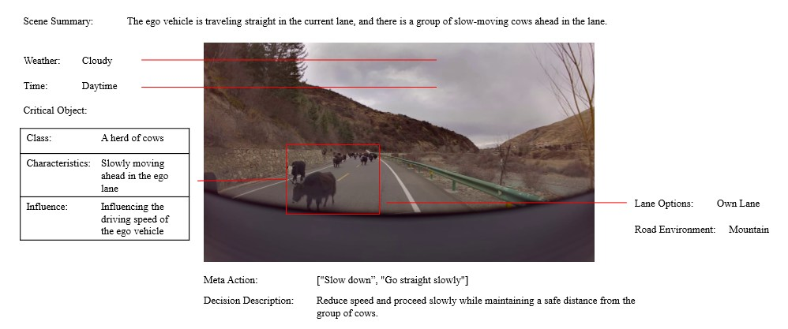
図9：SUP-AD データセットにおける牛や羊の群れの例。牛の群れが自車両の前方をゆっくり移動しており、自車両はゆっくり進んで牛との安全な距離を保つ必要がある。
図中ラベル：シーン要約：自車両は現在の車線を直進しており、車線の前方にはゆっくり移動する牛の群れがいる。／天候：曇り、時間帯：昼間、車線の選択肢：自車線（Own Lane）、道路環境：山地（Mountain）。重要物体：クラス：牛の群れ、特性：自車線の前方をゆっくり移動している、影響：自車両の走行速度に影響する。メタアクション：［「減速」「ゆっくり直進」］、意思決定記述：速度を落とし、牛の群れとの安全な距離を保ちながらゆっくり進む。
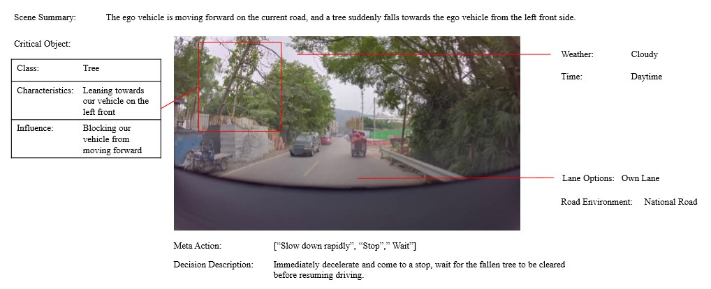
図10：SUP-AD データセットにおける倒木の例。木が突然自車両の方へ倒れてきており、自車両は直ちに減速する必要がある。
図中ラベル：シーン要約：自車両は現在の道路を前進しており、左前方から木が突然自車両の方へ倒れてくる。／天候：曇り、時間帯：昼間、車線の選択肢：自車線、道路環境：国道（National Road）。重要物体：クラス：木、特性：左前方で自車両の方へ傾いている、影響：自車両の前進をふさいでいる。メタアクション：［「急減速」「停止」「待機」］、意思決定記述：直ちに減速して停止し、倒木が撤去されるのを待ってから走行を再開する。
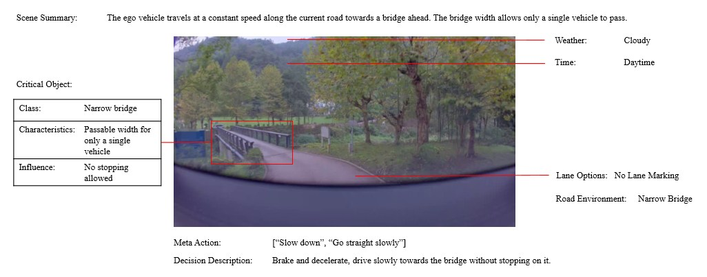
図11：SUP-AD データセットにおける河川の横断の例。自車両は車両 1 台しか通れない幅の橋を渡ろうとしており、停止せずに走行する必要がある。
図中ラベル：シーン要約：自車両は現在の道路を前方の橋に向かって一定速度で走行している。橋の幅は車両 1 台しか通れない。／天候：曇り、時間帯：昼間、車線の選択肢：車線表示なし（No Lane Marking）、道路環境：狭い橋（Narrow Bridge）。重要物体：クラス：狭い橋、特性：車両 1 台のみ通行可能な幅、影響：停止禁止。メタアクション：［「減速」「ゆっくり直進」］、意思決定記述：ブレーキをかけて減速し、橋の上で停止せずにゆっくり橋へ向かって走行する。
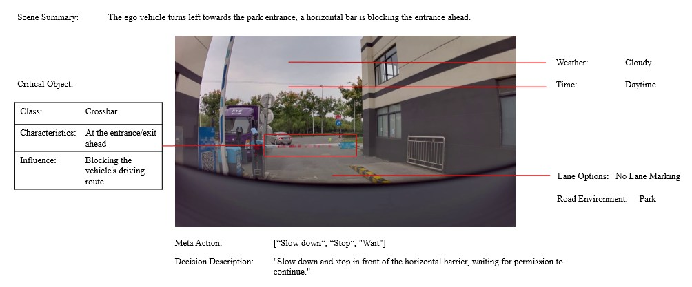
図12：SUP-AD データセットにおける遮断機の例。横向きのバーが公園の入口をふさいでおり、自車両は停止して進行の許可を待つ必要がある。
図中ラベル：シーン要約：自車両は公園の入口に向かって左折しており、前方の入口を横向きのバーがふさいでいる。／天候：曇り、時間帯：昼間、車線の選択肢：車線表示なし、道路環境：公園（Park）。重要物体：クラス：横木（Crossbar）、特性：前方の出入口にある、影響：車両の走行経路をふさいでいる。メタアクション：［「減速」「停止」「待機」］、意思決定記述：「減速して横向きの遮断機の手前で停止し、進行の許可を待つ。」
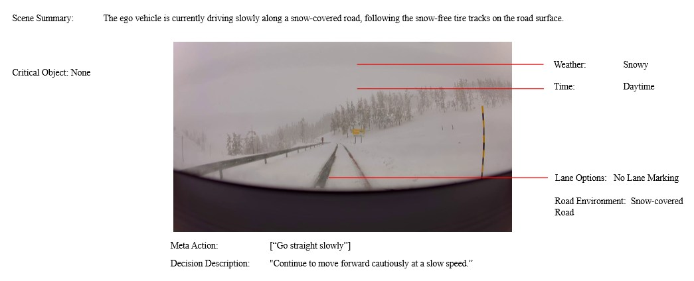
図13：SUP-AD データセットにおける降雪の例。道路の大部分が雪に覆われており、自車両は雪のないタイヤ跡をたどって慎重に前進する必要がある。
図中ラベル：Scene Summary＝シーン要約：自車両は現在、雪に覆われた道路を、路面上の雪のないタイヤ跡をたどりながらゆっくり走行している。／Critical Object: None＝重要物体：なし、Weather＝天候：雪（Snowy）、Time＝時間帯：昼間、Lane Options＝車線の選択肢：車線表示なし、Road Environment＝道路環境：雪に覆われた道路。Meta Action＝メタアクション：［「ゆっくり直進」］、Decision Description＝意思決定記述：「低速で慎重に前進を続ける。」
自動運転システムにとって、運転シーンを正確に解釈し、論理的で適切な判断を下す能力は最も重要である。本論文で示したように、自動運転における VLM の評価は 2 つの主要な構成要素、すなわちシーン記述／解析の評価とメタアクションの評価に集中している。
シーン記述／解析の評価に関して、運転シーンを解釈し言語化する過程には本質的な主観性がある。似た記述をテキストで表現する妥当な方法は数多くあるため、固定された指標でシーン記述を効果的に評価することは難しい。この課題を克服するため、GPT-4 を用いて、モデルが生成したシーン記述と人手でアノテーションした正解との類似度を評価する。まず、GPT-4 にプロンプトを与えて各シーン記述から個々の情報を抽出させる。続いて、抽出した各情報の一致状況に基づいて結果を採点し集計する。
シーン記述の正解ラベルは、環境記述と事象の要約の両方を含む。環境条件の記述には、天候条件、時間条件、道路環境、車線状況が含まれる。事象の要約は重要物体の特性と影響である。GPT-4 を用いて、環境記述と事象の要約の両方から固有の重要情報を抽出する。抽出された情報は次に比較され、定量化される。一致した各ペアには、一致の程度（完全、部分的、なし）に基づいて推定されたスコアが割り当てられる。ハルシネーションによる情報の事例にはペナルティが科され、全体のスコアから差し引かれる。これらのスコアの総計がシーン記述スコアとなる。
\[ \text{Score} = \frac{1.0 \times n_{\text{matched}} + 0.5 \times n_{\text{partial}}}{n_{\text{gt}}} - \frac{0.25 \times n_{\text{hallucination}}}{n_{\text{gt}}} \tag{2} \]
シーン記述を評価するための GPT-4 へのプロンプトは、表 10 に示すように注意深く設計されている。まず、ロールプロンプトを用いて、適切な運転スタイルについて包括的な理解を持つ、知的で論理的な評価者としての役割を確立する。次に入力形式を指定し、GPT-4 に対して、そのタスクが出力記述と正解記述を比較することであると伝える。この比較は、両方の記述からの重要情報の抽出と解析に基づく。最後に、プロンプトは採点の基準と評価出力の形式を概説し、評価プロセスへの構造化された体系的なアプローチを保証する。
| システムプロンプト： あなたは豊富な運転経験を持つ聡明で論理的な評価者であり、合理的で論理的な評価結果を出すよう最善を尽くす。 |
| 入力プロンプト： 2 つの運転シナリオの記述が与えられる。一方は参照記述、もう一方はモデルからの出力記述である。参照記述から重要情報を抽出し、それを比較基準として出力記述の近さを比較せよ。加えて、各情報の完全性を評価せよ。抽出される重要情報は、環境条件と重要事象に分類できる。環境条件の情報には、天候、時間帯、道路環境、車線状況が含まれる。重要事象は自車両の運転判断に関わる事象を記述するもので、通常は「重要物体 + 動詞/形容詞 + 自車両への影響」の形式で与えられる。重要事象の例は次のようなものである：工事区域が前方の自車線と右車線をふさいでいるため、車はそれを迂回する必要がある。それでは参照記述と出力記述を与える。 参照記述： 天候：晴れ。―― 時間帯：昼。―― 道路環境：市街地。―― 車線の選択肢：左車線、自車線、右車線。―― 自車線の位置：中央車線。 重要事象：前方に通過車両を検問している警察官がいる。あなたの車線の前方にいる警察官は、検問のため停止するようあなたに合図している。左車線にも車両が並んでいる。右車線は合流車線で現在分離されているため、右へ車線変更することはできない。 出力記述： 天候：晴れ。―― 時間帯：昼。 あなたの前方の遠くを走行している車両がある。左右に交通警察官がおり、交通警察官は停止を合図している。 抽出した重要情報を用いて 2 つの記述を比較し、0 から 1.0 のスケールで類似度スコアを出力するとともに、類似度スケールを計算した論理を説明せよ。一致した各重要情報は 1.0 点、部分的に一致した各重要情報は 0.5 点とする。ハルシネーションにもペナルティを科す。出力に存在するが参照に存在しない重要情報があれば、-0.25 点を割り当てる。最終スコアは、合計スコアを参照記述から抽出した重要情報の数で割ったものである。例えば、合計スコアが 1.5 で参照記述の重要情報の総数が 3 であれば、最終スコアは 1.5/3 = 0.5 となる。抽出と評価の詳細な過程を出力せよ。 |
| 応答： 参照記述の重要情報： 1. 天候：晴れ（環境条件） 2. 時間帯：昼（環境条件） 3. 道路環境：市街地（環境条件） 4. 車線の選択肢：左車線、自車線、右車線（環境条件） 5. 自車線の位置：中央車線（環境条件） 6. 前方で警察官が車両を検問している（重要事象） 7. 自車両前方の警察官が停止を合図している（重要事象） 8. 左車線に車両が並んでいる（重要事象） 9. 合流車線で現在分離されているため右車線へ変更できない（重要事象） 出力記述の重要情報： 1. 天候：晴れ。 2. 時間帯：昼。 3. ドライバーの前方の遠くを走行している車両 4. 左右に交通警察官 5. 交通警察官が停止を合図 出力を参照と比較すると： - 重要情報 1、2、6、7 が一致し、それぞれ 1.0 点（天候と時間帯、警察官とその停止の合図） - 出力の重要情報 3 は参照に記載されていないため、-0.25 点を減点。 得点なし： - 重要情報 3、4、5、8、9。 合計スコア = (1.0 + 1.0 + 1.0 + 1.0 - 0.25) / 9 = 0.417。 |
表10：GPT-4 によるシーン記述の評価プロセス。提案する評価方法は、構造化されたシーン記述から情報を抽出して評価できるだけでなく、非構造化の記述にも適用できる。
メタアクション系列の評価プロセスでは、一致したメタアクションの数と順序の両方を考慮する必要がある。モデルの出力とアノテーションされた正解を比較するために動的計画法を用いる。我々の動的計画法のアプローチは最長共通部分列を求める方法に類似しているが、2 つの追加の考慮事項がある。
第 1 の考慮事項は、メタアクションごとの重みが等しくないことを考慮するものである。例えば、「Slow Down（減速）」「Wait（待機）」「Go Straight Slowly（ゆっくり直進）」といった一部のメタアクションは、行動そのものよりも態度に重点を置いている。メタアクション系列におけるこれらの行動の有無は、運転判断の基本的な意味の本質を変えるものではなく、むしろ運転戦略をより積極的に、あるいはより慎重にするよう修飾するものである。例えば、「Slow Down -> Stop -> Wait」というメタアクション系列は、メタアクション「Stop」のみからなる系列と同様の運転判断を伝える。したがって、これらの系列は「Turn Left」や「Change Lane to the Right」といった他のメタアクションと同等のペナルティを受けるべきではない。そこで、これらを「保守的行動」として指定し、系列評価において一致しない場合には軽減したペナルティを適用する。
第 2 の考慮事項は、異なるメタアクション系列の間に意味的な等価性がありうることに対処するものである。例えば、「Change Lane to the Left -> Speed Up -> Go Straight At a Constant Speed -> Change Lane to the Right」と「Change Lane to the Left -> Speed Up Rapidly -> Go Straight At a Constant Speed -> Change Lane to the Right」という系列は、いずれも前方の低速車両を追い越すための妥当なアプローチを表しうる。異なるメタアクション系列が似た意味を伝えうることを踏まえ、表 11 に示すように、まず GPT-4 を用いて、唯一の正解メタアクション系列に加えて、意味的に同等な変種系列を生成する。評価の後続の系列照合段階では、これらすべての変種を、人手でアノテーションした正解とともに考慮する。そして最高スコアの照合を、最終的な判断評価の確定スコアとして採用する。
| プロンプト： あらかじめ定義された行動トークンの集合と参照運転行動の系列が与えられたとき、似た意味を持つが、定義済み行動トークンからわずかに異なる行動トークンを選んだ代替の行動系列をすべて見つけよ。 定義済み行動トークン：[Speed up（加速）, Slow down（減速）, Speed up rapidly（急加速）, Slow down rapidly（急減速）, Go straight slowly（ゆっくり直進）, Go straight at a constant speed（一定速度で直進）, Turn left（左折）, Turn right（右折）, Change lane to the left（左へ車線変更）, Change lane to the right（右へ車線変更）, Shift slightly to the left（左へわずかに寄る）, Shift slightly to the right（右へわずかに寄る）, Stop（停止）, Wait（待機）, Turn around（U ターン）, Reverse（後退）]。 例えば、参照運転行動系列が Slow down -> Shift slightly to the right -> Go straight at a constant speed であれば、似た意味を持つ代替行動系列は次のようになりうる： 1. Slow down -> Change lane to the right -> Go straight at a constant speed; 2. Slow down rapidly -> Shift slightly to the right -> Go straight at a constant speed; 3. Slow down -> Change lane to the right -> Go straight slowly; 4. Slow down -> Shift slightly to the right -> Go straight slowly. では、参照行動系列が Slow down -> Shift slightly to the right -> Go straight at a constant speed のとき、代替の行動系列は何か。 |
| 応答： 参照系列 "Slow down -> Shift slightly to the right -> Go straight at a constant speed." が与えられたとき、提供された行動トークンに基づく、似た意味を持つ代替行動系列は次のとおりである： 1. Slow down -> Change lane to the right -> Go straight at a constant speed. 2. Slow down rapidly -> Shift slightly to the right -> Go straight at a constant speed. 3. Slow down -> Change lane to the right -> Go straight slowly. 4. Slow down -> Shift slightly to the right -> Go straight slowly. この例はあなたが質問の中で提示したものである。 トークンと文脈に基づけば、これらは確かに適切な代替系列である。 |
表11：GPT-4 による代替行動系列の生成例。
動的計画法の状態は 2 次元行列に保存される。各行は正解行動系列中のメタアクションに、各列はモデル出力の行動系列中のメタアクションに対応し、\(S^{r,c}\) と表記する。動的計画法は、両系列の最初のメタアクションから再帰的な計算を開始する。2 次元行列の各要素は、現在の照合位置における最適な合計スコアと、その最適な照合をもたらした直前の照合条件を保持する。我々の動的計画法アルゴリズムでは、3 つの遷移式がそれぞれ異なる場合を扱う：照合欠落に対する \(S_{\text{missing}}\)、冗長な照合に対する \(S_{\text{redundant}}\)、照合成功に対する \(S_{\text{matching}}\) である。照合成功は、参照系列の \(r^{th}\) 番目の位置とモデル生成系列の \(c^{th}\) 番目の位置のメタアクションが同一であるときに起こる。照合欠落の場合、参照系列の \(r^{th}\) 番目の位置のメタアクションは一致しておらず、参照系列の \(r-1^{th}\) 番目の位置とモデル生成系列の \(c^{th}\) 番目の位置との比較に進む。逆に、冗長な照合は、モデル生成系列の \(c^{th}\) 番目の位置のメタアクションが一致していないことを意味し、参照系列の \(r^{th}\) 番目の位置とモデル生成系列の \(c-1^{th}\) 番目の位置をさらに調べることになる。これらの場合の変換式は次のとおりである。
\[ \begin{aligned} S^{r,c}_{\text{missing}} &= S^{r-1,c} - p_{\text{missing}}, \\ S^{r,c}_{\text{redundant}} &= S^{r,c-1} - p_{\text{redundant}}, \\ S^{r,c}_{\text{matching}} &= S^{r-1,c-1} + s_{\text{matching}}, \\ S^{r,c} &= \max(S^{r,c}_{\text{missing}}, S^{r,c}_{\text{redundant}}, S^{r,c}_{\text{matching}}), \end{aligned} \tag{3} \]
ここで \(s_{\text{matching}} = 1.0\) は照合成功後の報酬スコアを表す。欠落または冗長とみなされた行動が保守的行動に分類される場合、ペナルティ \(p_{\text{missing}}\) と \(p_{\text{redundant}}\) は \(s_{\text{matching}}\) の半分、すなわち 0.5 と定める。逆に、行動が保守的でない場合、両ペナルティには \(s_{\text{matching}}\) と同じ大きさ、すなわち 1.0 を割り当てる。このアプローチは、重要なメタアクションを省略することと、存在しないメタアクションを誤って導入することが、行動系列の有効性を同程度に損なうという前提に基づいている。最終スコア \(Score_{\text{action}}\) は、選択された参照メタアクション系列の長さで割るものとし、次のように定式化される。
\[ Score_{\text{action}} = \frac{S^{r,c}}{N_r} \tag{4} \]
DriveVLM の有効性と頑健性をさらに示すため、図 14、15、16、17、18 に追加の可視化結果を示す。図 14 では、DriveVLM は前方のゆっくり走行する車両を認識し、追い越しのために車線変更するという運転判断を出している。図 15 と図 16 では、DriveVLM は通常とは異なる車両の種類と倒木を正確に特定しており、ロングテール物体を認識する能力を示している。図 17 では、手のジェスチャで進行を合図する交通警察官が DriveVLM によって正確に捉えられている。図 18 では、DriveVLM はラウンドアバウトという道路環境を認識することに成功し、曲線経路の計画軌道を生成している。
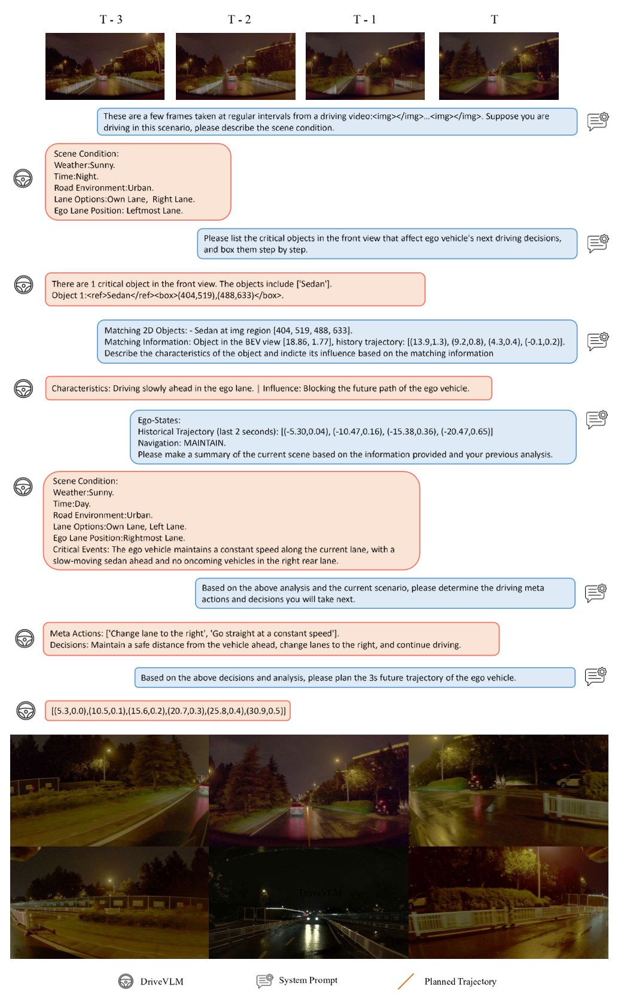
図14：DriveVLM の出力の可視化。DriveVLM は前方のゆっくり走行する車両を認識し、追い越しのために車線変更する運転判断を出している。
図中ラベル（凡例）：DriveVLM＝DriveVLM の応答、System Prompt＝システムプロンプト、Planned Trajectory＝計画軌道。T - 3〜T＝入力フレームの時刻。
対話の訳：［プロンプト］これらは運転動画から一定間隔で取り出したいくつかのフレームである：<img></img>…<img></img>。あなたがこのシナリオで運転していると仮定して、シーンの状況を記述せよ。
［DriveVLM］シーン状況：天候：晴れ。時間帯：夜。道路環境：市街地。車線の選択肢：自車線、右車線。自車線の位置：最も左の車線。
［プロンプト］自車両の次の運転判断に影響する前方視野内の重要物体を列挙し、段階的にボックスで囲め。
［DriveVLM］前方視野に重要物体が 1 つある。物体は ['Sedan']（セダン）を含む。Object 1:<ref>Sedan</ref><box>(404,519),(488,633)</box>。
［プロンプト］照合された 2D 物体：- 画像領域 [404, 519, 488, 633] のセダン。照合情報：BEV ビューの物体 [18.86, 1.77]、過去軌道：[(13.9,1.3), (9.2,0.8), (4.3,0.4), (-0.1,0.2)]。照合情報に基づいて物体の特性を記述し、その影響を示せ。
［DriveVLM］特性：自車線の前方をゆっくり走行している。｜影響：自車両の将来の経路をふさいでいる。
［プロンプト］自車状態：過去軌道（直近 2 秒）：[(-5.30,0.04), (-10.47,0.16), (-15.38,0.36), (-20.47,0.65)]。ナビゲーション：MAINTAIN（維持）。提供された情報とこれまでの解析に基づいて、現在のシーンを要約せよ。
［DriveVLM］シーン状況：天候：晴れ。時間帯：昼。道路環境：市街地。車線の選択肢：自車線、左車線。自車線の位置：最も右の車線。重要事象：自車両は現在の車線に沿って一定速度を維持しており、前方にゆっくり走行するセダンがあり、右後方の車線には接近する車両はない。
［プロンプト］以上の解析と現在のシナリオに基づいて、次に取る運転のメタアクションと判断を決定せよ。
［DriveVLM］メタアクション：['Change lane to the right'（右へ車線変更）, 'Go straight at a constant speed'（一定速度で直進）]。判断：前方車両との安全な距離を保ち、右へ車線変更して走行を続ける。
［プロンプト］以上の判断と解析に基づいて、自車両の 3s 先までの将来軌道を計画せよ。
［DriveVLM］[(5.3,0.0),(10.5,0.1),(15.6,0.2),(20.7,0.3),(25.8,0.4),(30.9,0.5)]
（訳注：原図では、最初のシーン状況（夜、自車線・右車線、最も左の車線）と要約時のシーン状況（昼、自車線・左車線、最も右の車線）が食い違っている。原図のまま訳出した。）
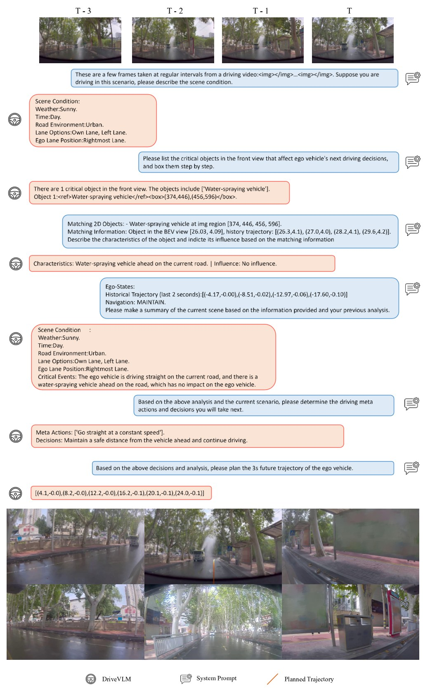
図15：DriveVLM の出力の可視化。DriveVLM は前方の通常とは異なる車両の種類を特定している。
図中ラベル（凡例）：DriveVLM＝DriveVLM の応答、System Prompt＝システムプロンプト、Planned Trajectory＝計画軌道。
対話の訳：［プロンプト］（図14と同じ、シーン状況の記述を求めるプロンプト）
［DriveVLM］シーン状況：天候：晴れ。時間帯：昼。道路環境：市街地。車線の選択肢：自車線、左車線。自車線の位置：最も右の車線。
［プロンプト］（図14と同じ、重要物体の列挙を求めるプロンプト）
［DriveVLM］前方視野に重要物体が 1 つある。物体は ['Water-spraying vehicle']（散水車）を含む。Object 1:<ref>Water-spraying vehicle</ref><box>(374,446),(456,596)</box>。
［プロンプト］照合された 2D 物体：- 画像領域 [374, 446, 456, 596] の散水車。照合情報：BEV ビューの物体 [26.03, 4.09]、過去軌道：[(26.3,4.1), (27.0,4.0), (28.2,4.1), (29.6,4.2)]。照合情報に基づいて物体の特性を記述し、その影響を示せ。
［DriveVLM］特性：現在の道路の前方にいる散水車。｜影響：影響なし。
［プロンプト］自車状態：過去軌道（直近 2 秒）：[(-4.17,-0.00),(-8.51,-0.02),(-12.97,-0.06),(-17.60,-0.10)]。ナビゲーション：MAINTAIN（維持）。提供された情報とこれまでの解析に基づいて、現在のシーンを要約せよ。
［DriveVLM］シーン状況：天候：晴れ。時間帯：昼。道路環境：市街地。車線の選択肢：自車線、左車線。自車線の位置：最も右の車線。重要事象：自車両は現在の道路を直進しており、道路の前方に散水車がいるが、自車両には影響しない。
［プロンプト］（図14と同じ、メタアクションと判断の決定を求めるプロンプト）
［DriveVLM］メタアクション：['Go straight at a constant speed'（一定速度で直進）]。判断：前方車両との安全な距離を保って走行を続ける。
［プロンプト］（図14と同じ、3s 先までの将来軌道の計画を求めるプロンプト）
［DriveVLM］[(4.1,-0.0),(8.2,-0.0),(12.2,-0.0),(16.2,-0.1),(20.1,-0.1),(24.0,-0.1)]
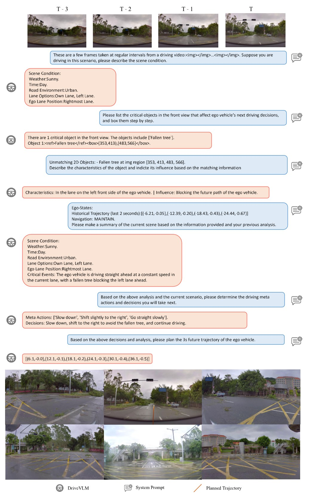
図16：DriveVLM の出力の可視化。DriveVLM は倒木とその位置を正確に検出し、続いて適切な迂回軌道を計画している。
図中ラベル（凡例）：DriveVLM＝DriveVLM の応答、System Prompt＝システムプロンプト、Planned Trajectory＝計画軌道。
対話の訳：［プロンプト］（図14と同じ、シーン状況の記述を求めるプロンプト）
［DriveVLM］シーン状況：天候：晴れ。時間帯：昼。道路環境：市街地。車線の選択肢：自車線、左車線。自車線の位置：最も右の車線。
［プロンプト］（図14と同じ、重要物体の列挙を求めるプロンプト）
［DriveVLM］前方視野に重要物体が 1 つある。物体は ['Fallen tree']（倒木）を含む。Object 1:<ref>Fallen tree</ref><box>(353,413),(483,566)</box>。
［プロンプト］照合されなかった 2D 物体：- 画像領域 [353, 413, 483, 566] の倒木。照合情報に基づいて物体の特性を記述し、その影響を示せ。
［DriveVLM］特性：自車両の左前方の車線上にある。｜影響：自車両の将来の経路をふさいでいる。
［プロンプト］自車状態：過去軌道（直近 2 秒）：[(-6.21,-0.05),(-12.39,-0.20),(-18.43,-0.43),(-24.44,-0.67)]。ナビゲーション：MAINTAIN（維持）。提供された情報とこれまでの解析に基づいて、現在のシーンを要約せよ。
［DriveVLM］シーン状況：天候：晴れ。時間帯：昼。道路環境：市街地。車線の選択肢：自車線、左車線。自車線の位置：最も右の車線。重要事象：自車両は現在の車線を一定速度で直進しており、前方では倒木が左車線をふさいでいる。
［プロンプト］（図14と同じ、メタアクションと判断の決定を求めるプロンプト）
［DriveVLM］メタアクション：['Slow down'（減速）, 'Shift slightly to the right'（右へわずかに寄る）, 'Go straight slowly'（ゆっくり直進）]。判断：減速し、倒木を避けるために右へ寄り、走行を続ける。
［プロンプト］（図14と同じ、3s 先までの将来軌道の計画を求めるプロンプト）
［DriveVLM］[(6.1,-0.0),(12.1,-0.1),(18.1,-0.2),(24.1,-0.3),(30.1,-0.4),(36.1,-0.5)]
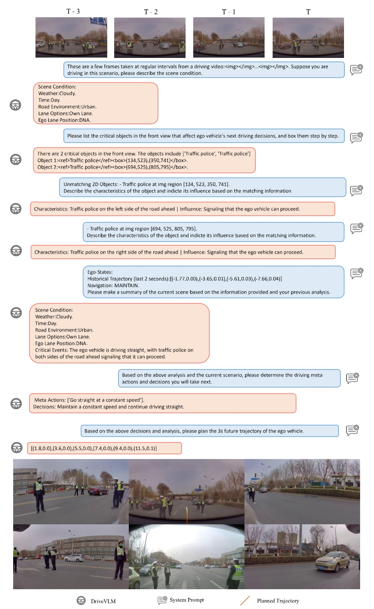
図17：DriveVLM の出力の可視化。手のジェスチャで進行を合図する交通警察官が、DriveVLM によって正確に捉えられている。
図中ラベル（凡例）：DriveVLM＝DriveVLM の応答、System Prompt＝システムプロンプト、Planned Trajectory＝計画軌道。
対話の訳：［プロンプト］（図14と同じ、シーン状況の記述を求めるプロンプト）
［DriveVLM］シーン状況：天候：曇り。時間帯：昼。道路環境：市街地。車線の選択肢：自車線。自車線の位置：DNA。
［プロンプト］（図14と同じ、重要物体の列挙を求めるプロンプト）
［DriveVLM］前方視野に重要物体が 2 つある。物体は ['Traffic police', 'Traffic police']（交通警察官、交通警察官）を含む。Object 1:<ref>Traffic police</ref><box>(134,523),(350,741)</box>。Object 2:<ref>Traffic police</ref><box>(694,525),(805,795)</box>。
［プロンプト］照合されなかった 2D 物体：- 画像領域 [134, 523, 350, 741] の交通警察官。照合情報に基づいて物体の特性を記述し、その影響を示せ。
［DriveVLM］特性：前方の道路左側にいる交通警察官｜影響：自車両が進行できることを合図している。
［プロンプト］- 画像領域 [694, 525, 805, 795] の交通警察官。照合情報に基づいて物体の特性を記述し、その影響を示せ。
［DriveVLM］特性：前方の道路右側にいる交通警察官｜影響：自車両が進行できることを合図している。
［プロンプト］自車状態：過去軌道（直近 2 秒）：[(-1.77,0.00),(-3.65,0.01),(-5.61,0.03),(-7.66,0.04)]。ナビゲーション：MAINTAIN（維持）。提供された情報とこれまでの解析に基づいて、現在のシーンを要約せよ。
［DriveVLM］シーン状況：天候：曇り。時間帯：昼。道路環境：市街地。車線の選択肢：自車線。自車線の位置：DNA。重要事象：自車両は直進しており、前方の道路の両側にいる交通警察官が進行してよいと合図している。
［プロンプト］（図14と同じ、メタアクションと判断の決定を求めるプロンプト）
［DriveVLM］メタアクション：['Go straight at a constant speed'（一定速度で直進）]。判断：一定速度を維持して直進を続ける。
［プロンプト］（図14と同じ、3s 先までの将来軌道の計画を求めるプロンプト）
［DriveVLM］[(1.8,0.0),(3.6,0.0),(5.5,0.0),(7.4,0.0),(9.4,0.0),(11.5,0.1)]
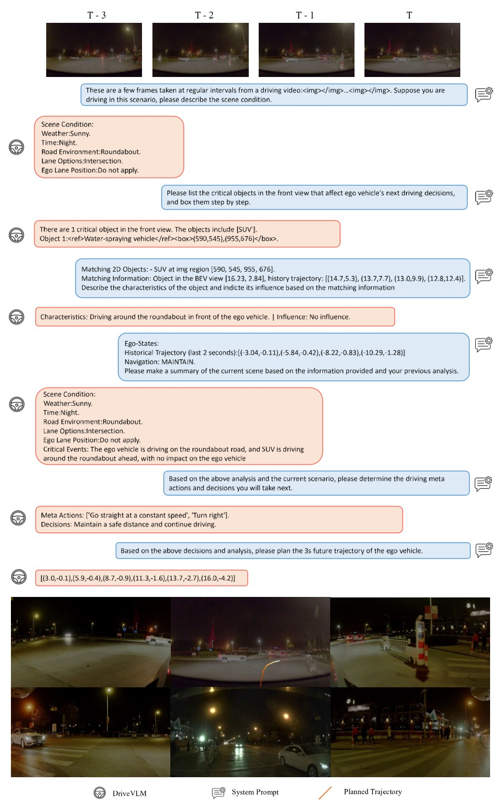
図18：DriveVLM の出力の可視化。DriveVLM はラウンドアバウトという道路環境を認識することに成功し、曲線経路の計画軌道を生成している。
図中ラベル（凡例）：DriveVLM＝DriveVLM の応答、System Prompt＝システムプロンプト、Planned Trajectory＝計画軌道。
対話の訳：［プロンプト］（図14と同じ、シーン状況の記述を求めるプロンプト）
［DriveVLM］シーン状況：天候：晴れ。時間帯：夜。道路環境：ラウンドアバウト。車線の選択肢：交差点。自車線の位置：該当なし。
［プロンプト］（図14と同じ、重要物体の列挙を求めるプロンプト）
［DriveVLM］前方視野に重要物体が 1 つある。物体は [SUV'] を含む。Object 1:<ref>Water-spraying vehicle</ref><box>(590,545),(955,676)</box>。（訳注：原図では物体が SUV とされる一方、<ref> タグ内は「Water-spraying vehicle（散水車）」となっており、食い違っている。）
［プロンプト］照合された 2D 物体：- 画像領域 [590, 545, 955, 676] の SUV。照合情報：BEV ビューの物体 [16.23, 2.84]、過去軌道：[(14.7,5.3), (13.7,7.7), (13.0,9.9), (12.8,12.4)]。照合情報に基づいて物体の特性を記述し、その影響を示せ。
［DriveVLM］特性：自車両の前方でラウンドアバウトを周回している。｜影響：影響なし。
［プロンプト］自車状態：過去軌道（直近 2 秒）：[(-3.04,-0.11),(-5.84,-0.42),(-8.22,-0.83),(-10.29,-1.28)]。ナビゲーション：MAINTAIN（維持）。提供された情報とこれまでの解析に基づいて、現在のシーンを要約せよ。
［DriveVLM］シーン状況：天候：晴れ。時間帯：夜。道路環境：ラウンドアバウト。車線の選択肢：交差点。自車線の位置：該当なし。重要事象：自車両はラウンドアバウトの道路を走行しており、SUV が前方のラウンドアバウトを周回しているが、自車両には影響しない。
［プロンプト］（図14と同じ、メタアクションと判断の決定を求めるプロンプト）
［DriveVLM］メタアクション：['Go straight at a constant speed'（一定速度で直進）, 'Turn right'（右折）]。判断：安全な距離を保って走行を続ける。
［プロンプト］（図14と同じ、3s 先までの将来軌道の計画を求めるプロンプト）
［DriveVLM］[(3.0,-0.1),(5.9,-0.4),(8.7,-0.9),(11.3,-1.6),(13.7,-2.7),(16.0,-4.2)]